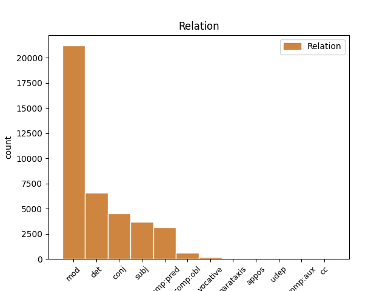
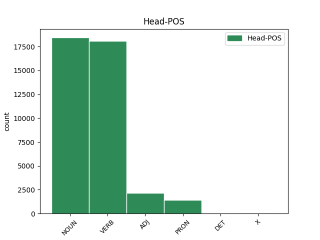
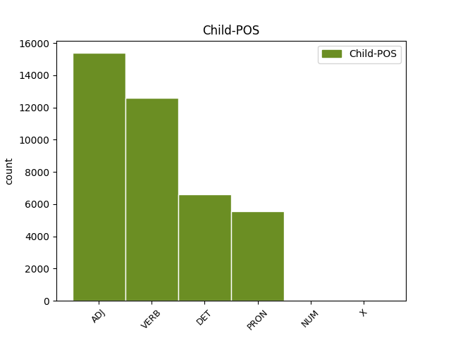

Distribution of features within this leaf



Agreement Rules sorted by frequency.
- When the dependent token is the modifer(mod) of the head token, and the head token is NOUN and the dependent token is ADJ.
1 καὶ _ _ _ _ 0 _ _ _
2 σὸν σός ADJ a-s---ma- Case=Acc|Gender=Masc|Number=Sing 4 mod _ _
3 διδάξω _ _ _ _ 0 _ _ _
4 πατέρα πατήρ NOUN n-s---ma- Case=Acc|Gender=Masc|Number=Sing 0 _ _ _
5 ποῖα _ _ _ _ 0 _ _ _
6 χρὴ _ _ _ _ 0 _ _ _
7 λέγειν _ _ _ _ 0 _ _ _
8 . _ _ _ _ 0 _ _ _
1 εὖ _ _ _ _ 0 _ _ _
2 γὰρ _ _ _ _ 0 _ _ _
3 ὁ ὁ DET l-s---mn- Case=Nom|Gender=Masc|Number=Sing 4 det _ _
4 ξένος ξένος NOUN n-s---mn- Case=Nom|Gender=Masc|Number=Sing 0 _ _ _
5 λέγει _ _ _ _ 0 _ _ _
6 . _ _ _ _ 0 _ _ _
1 ἐγὼ _ _ _ _ 0 _ _ _
2 δὲ _ _ _ _ 0 _ _ _
3 λαοὺς _ _ _ _ 0 _ _ _
4 συγκαλῶν συγκαλέω VERB v-sppamn- Case=Nom|Gender=Masc|Number=Sing|Tense=Pres|VerbForm=Part|Voice=Act 6 mod _ _
5 ἐγχωρίους _ _ _ _ 0 _ _ _
6 στείχω στείχω VERB v1spia--- Mood=Ind|Number=Sing|Person=1|Tense=Pres|VerbForm=Fin|Voice=Act 0 _ _ _
7 , _ _ _ _ 0 _ _ _
8 τὸ _ _ _ _ 0 _ _ _
9 κοινὸν _ _ _ _ 0 _ _ _
10 ὡς _ _ _ _ 0 _ _ _
11 ἂν _ _ _ _ 0 _ _ _
12 εὐμενὲς _ _ _ _ 0 _ _ _
13 τιθῶ _ _ _ _ 0 _ _ _
14 · _ _ _ _ 0 _ _ _
1 σὺ _ _ _ _ 0 _ _ _
2 καὶ _ _ _ _ 0 _ _ _
3 λέγων λέγω VERB v-sppamn- Case=Nom|Gender=Masc|Number=Sing|Tense=Pres|VerbForm=Part|Voice=Act 0 _ _ _
4 εὔφραινε _ _ _ _ 0 _ _ _
5 καὶ _ _ _ _ 0 _ _ _
6 πράσσων πράσσω VERB v-sppamn- Case=Nom|Gender=Masc|Number=Sing|Tense=Pres|VerbForm=Part|Voice=Act 3 conj _ _
7 φρένα _ _ _ _ 0 _ _ _
8 . _ _ _ _ 0 _ _ _
1 ἐγὼ ἐγώ PRON p-s---mn- Case=Nom|Gender=Masc|Number=Sing 6 subj _ _
2 δὲ _ _ _ _ 0 _ _ _
3 λαοὺς _ _ _ _ 0 _ _ _
4 συγκαλῶν _ _ _ _ 0 _ _ _
5 ἐγχωρίους _ _ _ _ 0 _ _ _
6 στείχω στείχω VERB v1spia--- Mood=Ind|Number=Sing|Person=1|Tense=Pres|VerbForm=Fin|Voice=Act 0 _ _ _
7 , _ _ _ _ 0 _ _ _
8 τὸ _ _ _ _ 0 _ _ _
9 κοινὸν _ _ _ _ 0 _ _ _
10 ὡς _ _ _ _ 0 _ _ _
11 ἂν _ _ _ _ 0 _ _ _
12 εὐμενὲς _ _ _ _ 0 _ _ _
13 τιθῶ _ _ _ _ 0 _ _ _
14 · _ _ _ _ 0 _ _ _
1 πολλῶν _ _ _ _ 0 _ _ _
2 τάδ̓ _ _ _ _ 0 _ _ _
3 ἡμῖν _ _ _ _ 0 _ _ _
4 ἐστιν _ _ _ _ 0 _ _ _
5 ἠξιωμένα _ _ _ _ 0 _ _ _
6 , _ _ _ _ 0 _ _ _
7 αἰδοῖον _ _ _ _ 0 _ _ _
8 εὑρεθέντα εὑρίσκω VERB v-sappma- Case=Acc|Gender=Masc|Number=Sing|Tense=Past|VerbForm=Part|Voice=Pass 9 mod _ _
9 πρόξενον πρόξενος NOUN n-s---ma- Case=Acc|Gender=Masc|Number=Sing 0 _ _ _
10 λαβεῖν _ _ _ _ 0 _ _ _
11 . _ _ _ _ 0 _ _ _
1 ἐγὼ _ _ _ _ 0 _ _ _
2 δὲ _ _ _ _ 0 _ _ _
3 λαοὺς _ _ _ _ 0 _ _ _
4 συγκαλῶν _ _ _ _ 0 _ _ _
5 ἐγχωρίους _ _ _ _ 0 _ _ _
6 στείχω _ _ _ _ 0 _ _ _
7 , _ _ _ _ 0 _ _ _
8 τὸ _ _ _ _ 0 _ _ _
9 κοινὸν _ _ _ _ 0 _ _ _
10 ὡς _ _ _ _ 0 _ _ _
11 ἂν _ _ _ _ 0 _ _ _
12 εὐμενὲς εὐμενής ADJ a-s---na- Case=Acc|Gender=Neut|Number=Sing 13 comp:pred _ _
13 τιθῶ τίθημι VERB v1spsa--- Mood=Sub|Number=Sing|Person=1|Tense=Pres|VerbForm=Fin|Voice=Act 0 _ _ _
14 · _ _ _ _ 0 _ _ _
1 λευρὸν _ _ _ _ 0 _ _ _
2 κατ̓ _ _ _ _ 0 _ _ _
3 ἄλσος ἄλσος NOUN n-s---na- Case=Acc|Gender=Neut|Number=Sing 0 _ _ _
4 νῦν _ _ _ _ 0 _ _ _
5 ἐπιστρέφου _ _ _ _ 0 _ _ _
6 τόδε ὅδε PRON p-s---na- Case=Acc|Gender=Neut|Number=Sing 3 mod _ SpaceAfter=No
7 . _ _ _ _ 0 _ _ _
1 ἐγὼ _ _ _ _ 0 _ _ _
2 δὲ _ _ _ _ 0 _ _ _
3 λαοὺς _ _ _ _ 0 _ _ _
4 συγκαλῶν _ _ _ _ 0 _ _ _
5 ἐγχωρίους _ _ _ _ 0 _ _ _
6 στείχω _ _ _ _ 0 _ _ _
7 , _ _ _ _ 0 _ _ _
8 τὸ ὁ DET l-s---na- Case=Acc|Gender=Neut|Number=Sing 9 det _ _
9 κοινὸν κοινός ADJ a-s---na- Case=Acc|Gender=Neut|Number=Sing 0 _ _ _
10 ὡς _ _ _ _ 0 _ _ _
11 ἂν _ _ _ _ 0 _ _ _
12 εὐμενὲς _ _ _ _ 0 _ _ _
13 τιθῶ _ _ _ _ 0 _ _ _
14 · _ _ _ _ 0 _ _ _
1 κείνου ἐκεῖνος ADJ a-s---mg- Case=Gen|Gender=Masc|Number=Sing 2 subj _ _
2 θέλοντος ἐθέλω VERB v-sppamg- Case=Gen|Gender=Masc|Number=Sing|Tense=Pres|VerbForm=Part|Voice=Act 0 _ _ _
3 εὖ _ _ _ _ 0 _ _ _
4 τελευτήσει _ _ _ _ 0 _ _ _
5 τάδε _ _ _ _ 0 _ _ _
6 . _ _ _ _ 0 _ _ _
1 ὠμμάτωσα ὀμματόω VERB v1saia--- Mood=Ind|Number=Sing|Person=1|Tense=Past|VerbForm=Fin|Voice=Act 0 _ _ _
2 γὰρ _ _ _ _ 0 _ _ _
3 σαφέστερον σαφής ADJ a-s---nac Case=Acc|Degree=Cmp|Gender=Neut|Number=Sing 1 mod _ SpaceAfter=No
4 . _ _ _ _ 0 _ _ _
1 τίς _ _ _ _ 0 _ _ _
2 δ̓ _ _ _ _ 0 _ _ _
3 ἂν _ _ _ _ 0 _ _ _
4 φίλους _ _ _ _ 0 _ _ _
5 ὠνοῖτο _ _ _ _ 0 _ _ _
6 τοὺς ὁ DET l-p---ma- Case=Acc|Gender=Masc|Number=Plur 7 det _ _
7 κεκτημένους κτέομαι VERB v-prpema- Aspect=Perf|Case=Acc|Gender=Masc|Number=Plur|Tense=Past|VerbForm=Part|Voice=Mid 0 _ _ _
8 ; _ _ _ _ 0 _ _ _
1 ποῦ _ _ _ _ 0 _ _ _
2 θράσος _ _ _ _ 0 _ _ _
3 νέμεις νέμω VERB v2spia--- Mood=Ind|Number=Sing|Person=2|Tense=Pres|VerbForm=Fin|Voice=Act 0 _ _ _
4 ἐμοί ἐγώ PRON p-s---fd- Case=Dat|Gender=Fem|Number=Sing 3 mod _ SpaceAfter=No
5 ; _ _ _ _ 0 _ _ _
1 ὅπως _ _ _ _ 0 _ _ _
2 δ̓ _ _ _ _ 0 _ _ _
3 ὅμαιμον _ _ _ _ 0 _ _ _
4 αἷμα _ _ _ _ 0 _ _ _
5 μὴ _ _ _ _ 0 _ _ _
6 γενήσεται _ _ _ _ 0 _ _ _
7 , _ _ _ _ 0 _ _ _
8 δεῖ _ _ _ _ 0 _ _ _
9 κάρτα _ _ _ _ 0 _ _ _
10 θύειν _ _ _ _ 0 _ _ _
11 καὶ _ _ _ _ 0 _ _ _
12 πεσεῖν _ _ _ _ 0 _ _ _
13 χρηστήρια χρηστήριος ADJ a-p---na- Case=Acc|Gender=Neut|Number=Plur 0 _ _ _
14 θεοῖσι _ _ _ _ 0 _ _ _
15 πολλοῖς _ _ _ _ 0 _ _ _
16 πολλά πολύς ADJ a-p---na- Case=Acc|Gender=Neut|Number=Plur 13 mod _ SpaceAfter=No
17 , _ _ _ _ 0 _ _ _
18 πημονῆς _ _ _ _ 0 _ _ _
19 ἄκη _ _ _ _ 0 _ _ _
20 . _ _ _ _ 0 _ _ _
1 καὶ _ _ _ _ 0 _ _ _
2 ξυμβολοῦσιν _ _ _ _ 0 _ _ _
3 οὐ _ _ _ _ 0 _ _ _
4 πολυστομεῖν _ _ _ _ 0 _ _ _
5 χρεὼν _ _ _ _ 0 _ _ _
6 ναύτην ναύτης NOUN n-s---ma- Case=Acc|Gender=Masc|Number=Sing 0 _ _ _
7 ἄγοντας _ _ _ _ 0 _ _ _
8 τόνδ̓ _ _ _ _ 0 _ _ _
9 ἐφέστιον ἐφέστιος ADJ a-s---ma- Case=Acc|Gender=Masc|Number=Sing 6 comp:pred _ _
10 θεῶν _ _ _ _ 0 _ _ _
11 . _ _ _ _ 0 _ _ _
1 τὸ _ _ _ _ 0 _ _ _
2 πάνσοφον _ _ _ _ 0 _ _ _
3 νῦν _ _ _ _ 0 _ _ _
4 ὄνομα _ _ _ _ 0 _ _ _
5 τοῦτό _ _ _ _ 0 _ _ _
6 μοι ἐγώ PRON p-s---md- Case=Dat|Gender=Masc|Number=Sing 7 comp:obl _ _
7 φράσον φράζω VERB v2sama--- Mood=Imp|Number=Sing|Person=2|Tense=Past|VerbForm=Fin|Voice=Act 0 _ _ _
8 . _ _ _ _ 0 _ _ _
1 λέξον λέγω VERB v2sama--- Mood=Imp|Number=Sing|Person=2|Tense=Past|VerbForm=Fin|Voice=Act 0 _ _ _
2 τίν̓ _ _ _ _ 0 _ _ _
3 αὐδὴν _ _ _ _ 0 _ _ _
4 τήνδε _ _ _ _ 0 _ _ _
5 γηρυθεῖσ̓ _ _ _ _ 0 _ _ _
6 ἔσῃ εἰμί VERB v2sfi---- Mood=Ind|Number=Sing|Person=2|Tense=Fut|VerbForm=Fin 1 comp:pred _ SpaceAfter=No
7 . _ _ _ _ 0 _ _ _
1 τοῖς _ _ _ _ 0 _ _ _
2 ἥσσοσιν _ _ _ _ 0 _ _ _
3 γὰρ _ _ _ _ 0 _ _ _
4 πᾶς πᾶς ADJ a-s---mn- Case=Nom|Gender=Masc|Number=Sing 5 mod _ _
5 τις τις PRON p-s---mn- Case=Nom|Gender=Masc|Number=Sing 0 _ _ _
6 εὐνοίας _ _ _ _ 0 _ _ _
7 φέρει _ _ _ _ 0 _ _ _
8 . _ _ _ _ 0 _ _ _
1 καὶ _ _ _ _ 0 _ _ _
2 μὴ _ _ _ _ 0 _ _ _
3 πρόλεσχος πρόλεσχος ADJ a-s---fn- Case=Nom|Gender=Fem|Number=Sing 0 _ _ _
4 μη _ _ _ _ 0 _ _ _
5 δ̓ _ _ _ _ 0 _ _ _
6 ἐφολκὸς ἐφολκός ADJ a-s---fn- Case=Nom|Gender=Fem|Number=Sing 3 conj _ _
7 ἐν _ _ _ _ 0 _ _ _
8 λόγῳ _ _ _ _ 0 _ _ _
9 γένῃ _ _ _ _ 0 _ _ _
10 . _ _ _ _ 0 _ _ _
1 πλάτα _ _ _ _ 0 _ _ _
2 μὲν _ _ _ _ 0 _ _ _
3 οὖν _ _ _ _ 0 _ _ _
4 λινορραφής _ _ _ _ 0 _ _ _
5 τε _ _ _ _ 0 _ _ _
6 δόμος _ _ _ _ 0 _ _ _
7 ἅλα _ _ _ _ 0 _ _ _
8 στέγων _ _ _ _ 0 _ _ _
9 δορὸς _ _ _ _ 0 _ _ _
10 ἀχείματόν ἀχείματος ADJ a-s---fa- Case=Acc|Gender=Fem|Number=Sing 11 comp:pred _ _
11 μ̓ ἐγώ PRON p-s---fa- Case=Acc|Gender=Fem|Number=Sing 0 _ _ _
12 ἔπεμπε _ _ _ _ 0 _ _ _
13 σὺν _ _ _ _ 0 _ _ _
14 πνοαῖς _ _ _ _ 0 _ _ _
15 · _ _ _ _ 0 _ _ _
1 ἅμα _ _ _ _ 0 _ _ _
2 δὲ _ _ _ _ 0 _ _ _
3 τούτοις οὗτος PRON p-p---nd- Case=Dat|Gender=Neut|Number=Plur 0 _ _ _
4 πραττομένοις πράσσω VERB v-pppend- Case=Dat|Gender=Neut|Number=Plur|Tense=Pres|VerbForm=Part|Voice=Mid 3 mod _ _
5 Ἀκραγαντῖνοι _ _ _ _ 0 _ _ _
6 τὸ _ _ _ _ 0 _ _ _
7 Μότυον _ _ _ _ 0 _ _ _
8 φρούριον _ _ _ _ 0 _ _ _
9 κατεχόμενον _ _ _ _ 0 _ _ _
10 ὑπὸ _ _ _ _ 0 _ _ _
11 τῶν _ _ _ _ 0 _ _ _
12 μετὰ _ _ _ _ 0 _ _ _
13 Δουκετίου _ _ _ _ 0 _ _ _
14 Σικελῶν _ _ _ _ 0 _ _ _
15 ἐξεπολιόρκησαν _ _ _ _ 0 _ _ _
16 , _ _ _ _ 0 _ _ _
17 καὶ _ _ _ _ 0 _ _ _
18 τὴν _ _ _ _ 0 _ _ _
19 δύναμιν _ _ _ _ 0 _ _ _
20 ἀπαγαγόντες _ _ _ _ 0 _ _ _
21 πρὸς _ _ _ _ 0 _ _ _
22 τοὺς _ _ _ _ 0 _ _ _
23 Συρακοσίους _ _ _ _ 0 _ _ _
24 νενικηκότας _ _ _ _ 0 _ _ _
25 ἤδη _ _ _ _ 0 _ _ _
26 κοινῇ _ _ _ _ 0 _ _ _
27 κατεστρατοπέδευσαν _ _ _ _ 0 _ _ _
28 . _ _ _ _ 0 _ _ _
1 τούτων _ _ _ _ 0 _ _ _
2 δὲ _ _ _ _ 0 _ _ _
3 ἀπιστούντων _ _ _ _ 0 _ _ _
4 διὰ _ _ _ _ 0 _ _ _
5 τὸ _ _ _ _ 0 _ _ _
6 ἀνεῳγμένας _ _ _ _ 0 _ _ _
7 αὐτοῖς _ _ _ _ 0 _ _ _
8 τὰς _ _ _ _ 0 _ _ _
9 ἐπιστολὰς _ _ _ _ 0 _ _ _
10 ἀναδεδόσθαι _ _ _ _ 0 _ _ _
11 , _ _ _ _ 0 _ _ _
12 καὶ _ _ _ _ 0 _ _ _
13 πίστιν _ _ _ _ 0 _ _ _
14 ἑτέραν _ _ _ _ 0 _ _ _
15 βεβαιοτέραν _ _ _ _ 0 _ _ _
16 ζητούντων _ _ _ _ 0 _ _ _
17 , _ _ _ _ 0 _ _ _
18 ἐπηγγείλατο _ _ _ _ 0 _ _ _
19 παραδώσειν _ _ _ _ 0 _ _ _
20 αὐτὸν αὐτός PRON p-s---ma- Case=Acc|Gender=Masc|Number=Sing 0 _ _ _
21 ὁμολογοῦντα ὁμολογέω VERB v-sppama- Case=Acc|Gender=Masc|Number=Sing|Tense=Pres|VerbForm=Part|Voice=Act 20 comp:pred _ SpaceAfter=No
22 . _ _ _ _ 0 _ _ _
1 μή _ _ _ _ 0 _ _ _
2 τι _ _ _ _ 0 _ _ _
3 τλῇς _ _ _ _ 0 _ _ _
4 τὰν _ _ _ _ 0 _ _ _
5 ἱκέτιν ἱκέτις NOUN n-s---fa- Case=Acc|Gender=Fem|Number=Sing 0 _ _ _
6 εἰσιδεῖν _ _ _ _ 0 _ _ _
7 ἀπὸ _ _ _ _ 0 _ _ _
8 βρετέων _ _ _ _ 0 _ _ _
9 βίᾳ _ _ _ _ 0 _ _ _
10 δίκας _ _ _ _ 0 _ _ _
11 ἀγομέναν ἄγω VERB v-sppefa- Case=Acc|Gender=Fem|Number=Sing|Tense=Pres|VerbForm=Part|Voice=Mid 5 comp:pred _ _
12 ἱππηδὸν _ _ _ _ 0 _ _ _
13 ἀμπύκων _ _ _ _ 0 _ _ _
14 , _ _ _ _ 0 _ _ _
15 πολυμίτων _ _ _ _ 0 _ _ _
16 πέπλων _ _ _ _ 0 _ _ _
17 τ̓ _ _ _ _ 0 _ _ _
18 ἐπιλαβὰς _ _ _ _ 0 _ _ _
19 ἐμῶν _ _ _ _ 0 _ _ _
20 . _ _ _ _ 0 _ _ _
1 τῶν _ _ _ _ 0 _ _ _
2 δὲ _ _ _ _ 0 _ _ _
3 διαφυγόντων διαφεύγω VERB v-papamg- Case=Gen|Gender=Masc|Number=Plur|Tense=Past|VerbForm=Part|Voice=Act 5 mod _ _
4 οἱ _ _ _ _ 0 _ _ _
5 πλείους πλείων ADJ a-p---mac Case=Acc|Degree=Cmp|Gender=Masc|Number=Plur 0 _ _ _
6 μὲν _ _ _ _ 0 _ _ _
7 εἰς _ _ _ _ 0 _ _ _
8 τὰ _ _ _ _ 0 _ _ _
9 φρούρια _ _ _ _ 0 _ _ _
10 τῶν _ _ _ _ 0 _ _ _
11 Σικελῶν _ _ _ _ 0 _ _ _
12 διεσώθησαν _ _ _ _ 0 _ _ _
13 , _ _ _ _ 0 _ _ _
14 ὀλίγοι _ _ _ _ 0 _ _ _
15 δὲ _ _ _ _ 0 _ _ _
16 μετὰ _ _ _ _ 0 _ _ _
17 Δουκετίου _ _ _ _ 0 _ _ _
18 τῶν _ _ _ _ 0 _ _ _
19 αὐτῶν _ _ _ _ 0 _ _ _
20 ἐλπίδων _ _ _ _ 0 _ _ _
21 μετέχειν _ _ _ _ 0 _ _ _
22 προείλοντο _ _ _ _ 0 _ _ _
23 . _ _ _ _ 0 _ _ _
1 ὦ _ _ _ _ 0 _ _ _
2 πέπον πέπων ADJ a-s---mv- Case=Voc|Gender=Masc|Number=Sing 11 vocative _ SpaceAfter=No
3 , _ _ _ _ 0 _ _ _
4 οὐ _ _ _ _ 0 _ _ _
5 μὲν _ _ _ _ 0 _ _ _
6 γὰρ _ _ _ _ 0 _ _ _
7 τοι _ _ _ _ 0 _ _ _
8 Ἄρης _ _ _ _ 0 _ _ _
9 θανάτοιο _ _ _ _ 0 _ _ _
10 τελευτὴν _ _ _ _ 0 _ _ _
11 ἀρκέσει ἀρκέω VERB v3sfia--- Mood=Ind|Number=Sing|Person=3|Tense=Fut|VerbForm=Fin|Voice=Act 0 _ _ _
12 , _ _ _ _ 0 _ _ _
13 εἰ _ _ _ _ 0 _ _ _
14 δὴ _ _ _ _ 0 _ _ _
15 νῶι _ _ _ _ 0 _ _ _
16 συνοισόμεθα _ _ _ _ 0 _ _ _
17 πτολεμίζειν _ _ _ _ 0 _ _ _
18 . _ _ _ _ 0 _ _ _
1 ἐμοῦ ἐγώ PRON p-s---mg- Case=Gen|Gender=Masc|Number=Sing 5 mod _ _
2 δ̓ _ _ _ _ 0 _ _ _
3 ἄνακτος _ _ _ _ 0 _ _ _
4 εὐλόγως _ _ _ _ 0 _ _ _
5 ἐπώνυμον ἐπώνυμος ADJ a-s---nn- Case=Nom|Gender=Neut|Number=Sing 0 _ _ _
6 γένος _ _ _ _ 0 _ _ _
7 Πελασγῶν _ _ _ _ 0 _ _ _
8 τήνδε _ _ _ _ 0 _ _ _
9 καρποῦται _ _ _ _ 0 _ _ _
10 χθόνα _ _ _ _ 0 _ _ _
11 . _ _ _ _ 0 _ _ _
1 μεγάλης _ _ _ _ 0 _ _ _
2 δ̓ _ _ _ _ 0 _ _ _
3 οὔσης _ _ _ _ 0 _ _ _
4 δεισιδαιμονίας _ _ _ _ 0 _ _ _
5 , _ _ _ _ 0 _ _ _
6 οἱ _ _ _ _ 0 _ _ _
7 τὰς _ _ _ _ 0 _ _ _
8 ἀμφισβητήσεις _ _ _ _ 0 _ _ _
9 ἔχοντες ἔχω VERB v-pppamn- Case=Nom|Gender=Masc|Number=Plur|Tense=Pres|VerbForm=Part|Voice=Act 23 subj _ SpaceAfter=No
10 , _ _ _ _ 0 _ _ _
11 ὅταν _ _ _ _ 0 _ _ _
12 ὑπό _ _ _ _ 0 _ _ _
13 τινος _ _ _ _ 0 _ _ _
14 ὑπεροχῆς _ _ _ _ 0 _ _ _
15 κατισχύωνται _ _ _ _ 0 _ _ _
16 , _ _ _ _ 0 _ _ _
17 τῇ _ _ _ _ 0 _ _ _
18 διὰ _ _ _ _ 0 _ _ _
19 τῶν _ _ _ _ 0 _ _ _
20 ὅρκων _ _ _ _ 0 _ _ _
21 τούτων _ _ _ _ 0 _ _ _
22 ἀνακρίσει _ _ _ _ 0 _ _ _
23 κρίνονται κρίνω VERB v3ppie--- Mood=Ind|Number=Plur|Person=3|Tense=Pres|VerbForm=Fin|Voice=Mid 0 _ _ _
24 . _ _ _ _ 0 _ _ _
1 τούτων οὗτος PRON p-p---mg- Case=Gen|Gender=Masc|Number=Plur 3 comp:pred _ _
2 δ̓ _ _ _ _ 0 _ _ _
3 ἦσαν εἰμί VERB v3piia--- Aspect=Imp|Mood=Ind|Number=Plur|Person=3|Tense=Past|VerbForm=Fin|Voice=Act 0 _ _ _
4 Γελῷοι _ _ _ _ 0 _ _ _
5 καὶ _ _ _ _ 0 _ _ _
6 Ἀκραγαντῖνοι _ _ _ _ 0 _ _ _
7 καὶ _ _ _ _ 0 _ _ _
8 Ἱμεραῖοι _ _ _ _ 0 _ _ _
9 . _ _ _ _ 0 _ _ _
1 σκοπεῖτε σκοπέω VERB v2ppma--- Mood=Imp|Number=Plur|Person=2|Tense=Pres|VerbForm=Fin|Voice=Act 0 _ _ _
2 , _ _ _ _ 0 _ _ _
3 κἀμείβεσθε ἀμείβω VERB v2ppme--- Mood=Imp|Number=Plur|Person=2|Tense=Pres|VerbForm=Fin|Voice=Mid 1 parataxis _ _
4 τόνδε _ _ _ _ 0 _ _ _
5 τὸν _ _ _ _ 0 _ _ _
6 τρόπον _ _ _ _ 0 _ _ _
7 , _ _ _ _ 0 _ _ _
8 ὅπως _ _ _ _ 0 _ _ _
9 ἂν _ _ _ _ 0 _ _ _
10 ὑμῖν _ _ _ _ 0 _ _ _
11 πρᾶγος _ _ _ _ 0 _ _ _
12 εὖ _ _ _ _ 0 _ _ _
13 νικᾷ _ _ _ _ 0 _ _ _
14 τόδε _ _ _ _ 0 _ _ _
15 . _ _ _ _ 0 _ _ _
1 πρύτανις _ _ _ _ 0 _ _ _
2 ἄκριτος _ _ _ _ 0 _ _ _
3 ὤν _ _ _ _ 0 _ _ _
4 , _ _ _ _ 0 _ _ _
5 κρατύνεις _ _ _ _ 0 _ _ _
6 βωμόν βωμός NOUN n-s---ma- Case=Acc|Gender=Masc|Number=Sing 0 _ _ _
7 , _ _ _ _ 0 _ _ _
8 ἑστίαν ἕστιος ADJ a-s---fa- Case=Acc|Gender=Fem|Number=Sing 6 conj _ _
9 χθονός _ _ _ _ 0 _ _ _
10 , _ _ _ _ 0 _ _ _
11 μονοψήφοισι _ _ _ _ 0 _ _ _
12 νεύμασιν _ _ _ _ 0 _ _ _
13 σέθεν _ _ _ _ 0 _ _ _
14 , _ _ _ _ 0 _ _ _
15 μονοσκήπτροισι _ _ _ _ 0 _ _ _
16 δ̓ _ _ _ _ 0 _ _ _
17 ἐν _ _ _ _ 0 _ _ _
18 θρόνοις _ _ _ _ 0 _ _ _
19 χρέος _ _ _ _ 0 _ _ _
20 πᾶν _ _ _ _ 0 _ _ _
21 ἐπικραίνεις _ _ _ _ 0 _ _ _
22 · _ _ _ _ 0 _ _ _
1 φήμη _ _ _ _ 0 _ _ _
2 δ̓ _ _ _ _ 0 _ _ _
3 οὔτις _ _ _ _ 0 _ _ _
4 πάμπαν _ _ _ _ 0 _ _ _
5 ἀπόλλυται _ _ _ _ 0 _ _ _
6 , _ _ _ _ 0 _ _ _
7 ἥν ὅς PRON p-s---fa- Case=Acc|Gender=Fem|Number=Sing 0 _ _ _
8 τινα τις PRON p-s---fa- Case=Acc|Gender=Fem|Number=Sing 7 mod _ _
9 πολλοὶ _ _ _ _ 0 _ _ _
10 λαοὶ _ _ _ _ 0 _ _ _
11 φημίξωσι _ _ _ _ 0 _ _ _
12 · _ _ _ _ 0 _ _ _
1 καὶ _ _ _ _ 0 _ _ _
2 τὰ ὁ DET l-p---nn- Case=Nom|Gender=Neut|Number=Plur 8 det _ _
3 μὲν _ _ _ _ 0 _ _ _
4 κατὰ _ _ _ _ 0 _ _ _
5 τὴν _ _ _ _ 0 _ _ _
6 Σικελίαν _ _ _ _ 0 _ _ _
7 ἐν _ _ _ _ 0 _ _ _
8 τούτοις οὗτος PRON p-p---nd- Case=Dat|Gender=Neut|Number=Plur 0 _ _ _
9 ἦν _ _ _ _ 0 _ _ _
10 . _ _ _ _ 0 _ _ _
1 ὁ _ _ _ _ 0 _ _ _
2 δὲ _ _ _ _ 0 _ _ _
3 Τολμίδης _ _ _ _ 0 _ _ _
4 σπεύδων _ _ _ _ 0 _ _ _
5 μὴ _ _ _ _ 0 _ _ _
6 μόνον _ _ _ _ 0 _ _ _
7 τοὺς _ _ _ _ 0 _ _ _
8 τεταγμένους _ _ _ _ 0 _ _ _
9 χιλίους _ _ _ _ 0 _ _ _
10 ἐξαγαγεῖν _ _ _ _ 0 _ _ _
11 εἰς _ _ _ _ 0 _ _ _
12 τὴν _ _ _ _ 0 _ _ _
13 στρατείαν _ _ _ _ 0 _ _ _
14 , _ _ _ _ 0 _ _ _
15 προσιὼν _ _ _ _ 0 _ _ _
16 ἑκάστῳ _ _ _ _ 0 _ _ _
17 τῶν _ _ _ _ 0 _ _ _
18 νέων νέος ADJ a-p---mg- Case=Gen|Gender=Masc|Number=Plur 0 _ _ _
19 καὶ _ _ _ _ 0 _ _ _
20 τῇ _ _ _ _ 0 _ _ _
21 ῥώμῃ _ _ _ _ 0 _ _ _
22 διαφερόντων διαφέρω VERB v-pppamg- Case=Gen|Gender=Masc|Number=Plur|Tense=Pres|VerbForm=Part|Voice=Act 18 conj _ _
23 ἔλεγεν _ _ _ _ 0 _ _ _
24 ὡς _ _ _ _ 0 _ _ _
25 μέλλει _ _ _ _ 0 _ _ _
26 καταλέγειν _ _ _ _ 0 _ _ _
27 αὐτόν _ _ _ _ 0 _ _ _
28 · _ _ _ _ 0 _ _ _
1 καὶ _ _ _ _ 0 _ _ _
2 ταῦτ̓ οὗτος ADJ a-p---na- Case=Acc|Gender=Neut|Number=Plur 0 _ _ _
3 ἀληθῆ ἀληθής ADJ a-p---na- Case=Acc|Gender=Neut|Number=Plur 2 comp:pred _ _
4 πάντα _ _ _ _ 0 _ _ _
5 προσφύσω _ _ _ _ 0 _ _ _
6 λόγῳ _ _ _ _ 0 _ _ _
7 . _ _ _ _ 0 _ _ _
1 τί _ _ _ _ 0 _ _ _
2 οὖν _ _ _ _ 0 _ _ _
3 ἔτευξεν τεύχω VERB v3saia--- Mood=Ind|Number=Sing|Person=3|Tense=Past|VerbForm=Fin|Voice=Act 0 _ _ _
4 ἄλλο _ _ _ _ 0 _ _ _
5 δυσπότμῳ _ _ _ _ 0 _ _ _
6 βοΐ βοῦς ADJ a-s---fd- Case=Dat|Gender=Fem|Number=Sing 3 comp:obl _ SpaceAfter=No
7 ; _ _ _ _ 0 _ _ _
1 οἱ _ _ _ _ 0 _ _ _
2 Φωκεῖς _ _ _ _ 0 _ _ _
3 ἐνεστήσαντο _ _ _ _ 0 _ _ _
4 πόλεμον _ _ _ _ 0 _ _ _
5 πρὸς _ _ _ _ 0 _ _ _
6 Δωριεῖς _ _ _ _ 0 _ _ _
7 , _ _ _ _ 0 _ _ _
8 τοὺς _ _ _ _ 0 _ _ _
9 προγόνους πρόγονος NOUN n-p---ma- Case=Acc|Gender=Masc|Number=Plur 0 _ _ _
10 μὲν _ _ _ _ 0 _ _ _
11 Λακεδαιμονίων _ _ _ _ 0 _ _ _
12 , _ _ _ _ 0 _ _ _
13 οἰκοῦντας οἰκέω VERB v-pppama- Case=Acc|Gender=Masc|Number=Plur|Tense=Pres|VerbForm=Part|Voice=Act 9 conj _ _
14 δὲ _ _ _ _ 0 _ _ _
15 πόλεις _ _ _ _ 0 _ _ _
16 τρεῖς _ _ _ _ 0 _ _ _
17 , _ _ _ _ 0 _ _ _
18 Κυτίνιον _ _ _ _ 0 _ _ _
19 καὶ _ _ _ _ 0 _ _ _
20 Βοιὸν _ _ _ _ 0 _ _ _
21 καὶ _ _ _ _ 0 _ _ _
22 Ἐρινεόν _ _ _ _ 0 _ _ _
23 , _ _ _ _ 0 _ _ _
24 κειμένας _ _ _ _ 0 _ _ _
25 ὑπὸ _ _ _ _ 0 _ _ _
26 τὸν _ _ _ _ 0 _ _ _
27 λόφον _ _ _ _ 0 _ _ _
28 τὸν _ _ _ _ 0 _ _ _
29 ὀνομαζόμενον _ _ _ _ 0 _ _ _
30 Παρνασσόν _ _ _ _ 0 _ _ _
31 . _ _ _ _ 0 _ _ _
1 ἐν _ _ _ _ 0 _ _ _
2 δὲ _ _ _ _ 0 _ _ _
3 λιμὴν _ _ _ _ 0 _ _ _
4 ἐύορμος _ _ _ _ 0 _ _ _
5 ἀμαιμακέτοιο _ _ _ _ 0 _ _ _
6 θαλάσσης _ _ _ _ 0 _ _ _
7 κυκλοτερὴς _ _ _ _ 0 _ _ _
8 ἐτέτυκτο _ _ _ _ 0 _ _ _
9 πανέφθου _ _ _ _ 0 _ _ _
10 κασσιτέροιο _ _ _ _ 0 _ _ _
11 κλυζομένῳ κλύζω VERB v-sppemd- Case=Dat|Gender=Masc|Number=Sing|Tense=Pres|VerbForm=Part|Voice=Mid 12 comp:pred _ _
12 ἴκελος ἴκελος ADJ a-s---mn- Case=Nom|Gender=Masc|Number=Sing 0 _ _ _
13 · _ _ _ _ 0 _ _ _
1 ἢ _ _ _ _ 0 _ _ _
2 τοῖσιν ὁ PRON p-p---md- Case=Dat|Gender=Masc|Number=Plur 0 _ _ _
3 ἢ _ _ _ _ 0 _ _ _
4 τοῖς ὁ PRON p-p---md- Case=Dat|Gender=Masc|Number=Plur 2 conj _ _
5 πόλεμον _ _ _ _ 0 _ _ _
6 αἴρεσθαι _ _ _ _ 0 _ _ _
7 μέγαν _ _ _ _ 0 _ _ _
8 πᾶσ̓ _ _ _ _ 0 _ _ _
9 ἔστ̓ _ _ _ _ 0 _ _ _
10 ἀνάγκη _ _ _ _ 0 _ _ _
11 , _ _ _ _ 0 _ _ _
12 καὶ _ _ _ _ 0 _ _ _
13 γεγόμφωται _ _ _ _ 0 _ _ _
14 σκάφος _ _ _ _ 0 _ _ _
15 στρέβλαισι _ _ _ _ 0 _ _ _
16 ναυτικαῖσιν _ _ _ _ 0 _ _ _
17 ὡς _ _ _ _ 0 _ _ _
18 προσηγμένον _ _ _ _ 0 _ _ _
19 . _ _ _ _ 0 _ _ _
1 σὺ σύ PRON p-s----n- Case=Nom|Number=Sing 4 vocative _ _
2 καὶ _ _ _ _ 0 _ _ _
3 λέγων _ _ _ _ 0 _ _ _
4 εὔφραινε εὐφραίνω VERB v2spma--- Mood=Imp|Number=Sing|Person=2|Tense=Pres|VerbForm=Fin|Voice=Act 0 _ _ _
5 καὶ _ _ _ _ 0 _ _ _
6 πράσσων _ _ _ _ 0 _ _ _
7 φρένα _ _ _ _ 0 _ _ _
8 . _ _ _ _ 0 _ _ _
1 ὀλίγους _ _ _ _ 0 _ _ _
2 γὰρ _ _ _ _ 0 _ _ _
3 προάγων _ _ _ _ 0 _ _ _
4 στρατιώτας στρατιώτης NOUN n-p---ma- Case=Acc|Gender=Masc|Number=Plur 0 _ _ _
5 , _ _ _ _ 0 _ _ _
6 καὶ _ _ _ _ 0 _ _ _
7 τούτους οὗτος PRON p-p---ma- Case=Acc|Gender=Masc|Number=Plur 4 conj _ _
8 ἀρίστους _ _ _ _ 0 _ _ _
9 ταῖς _ _ _ _ 0 _ _ _
10 ἀνδραγαθίαις _ _ _ _ 0 _ _ _
11 , _ _ _ _ 0 _ _ _
12 παρετάξατο _ _ _ _ 0 _ _ _
13 κατὰ _ _ _ _ 0 _ _ _
14 τὴν _ _ _ _ 0 _ _ _
15 Βοιωτίαν _ _ _ _ 0 _ _ _
16 πρὸς _ _ _ _ 0 _ _ _
17 πολλαπλασίους _ _ _ _ 0 _ _ _
18 , _ _ _ _ 0 _ _ _
19 καὶ _ _ _ _ 0 _ _ _
20 κατὰ _ _ _ _ 0 _ _ _
21 κράτος _ _ _ _ 0 _ _ _
22 περιεγένετο _ _ _ _ 0 _ _ _
23 τῶν _ _ _ _ 0 _ _ _
24 ἀντιταχθέντων _ _ _ _ 0 _ _ _
25 . _ _ _ _ 0 _ _ _
1 ζηλώσαντος _ _ _ _ 0 _ _ _
2 γὰρ _ _ _ _ 0 _ _ _
3 αὐτοῦ _ _ _ _ 0 _ _ _
4 τὴν _ _ _ _ 0 _ _ _
5 Περσικὴν _ _ _ _ 0 _ _ _
6 τρυφὴν _ _ _ _ 0 _ _ _
7 καὶ _ _ _ _ 0 _ _ _
8 τυραννικῶς _ _ _ _ 0 _ _ _
9 προσφερομένου _ _ _ _ 0 _ _ _
10 τοῖς _ _ _ _ 0 _ _ _
11 ὑποτεταγμένοις _ _ _ _ 0 _ _ _
12 , _ _ _ _ 0 _ _ _
13 χαλεπῶς _ _ _ _ 0 _ _ _
14 ἔφερον _ _ _ _ 0 _ _ _
15 ἅπαντες _ _ _ _ 0 _ _ _
16 , _ _ _ _ 0 _ _ _
17 μάλιστα _ _ _ _ 0 _ _ _
18 δὲ _ _ _ _ 0 _ _ _
19 οἱ ὁ DET l-p---mn- Case=Nom|Gender=Masc|Number=Plur 0 _ _ _
20 τεταγμένοι τάσσω VERB v-prpemn- Aspect=Perf|Case=Nom|Gender=Masc|Number=Plur|Tense=Past|VerbForm=Part|Voice=Mid 19 mod _ _
21 τῶν _ _ _ _ 0 _ _ _
22 Ἑλλήνων _ _ _ _ 0 _ _ _
23 ἐπί _ _ _ _ 0 _ _ _
24 τινος _ _ _ _ 0 _ _ _
25 ἡγεμονίας _ _ _ _ 0 _ _ _
26 . _ _ _ _ 0 _ _ _
1 οἱ _ _ _ _ 0 _ _ _
2 μὲν _ _ _ _ 0 _ _ _
3 πολῖται _ _ _ _ 0 _ _ _
4 διελάμβανον _ _ _ _ 0 _ _ _
5 αὐτὸν _ _ _ _ 0 _ _ _
6 καταλέξειν _ _ _ _ 0 _ _ _
7 εἰς _ _ _ _ 0 _ _ _
8 τὴν _ _ _ _ 0 _ _ _
9 στρατιὰν _ _ _ _ 0 _ _ _
10 τῶν _ _ _ _ 0 _ _ _
11 νέων _ _ _ _ 0 _ _ _
12 τοὺς _ _ _ _ 0 _ _ _
13 ἀκμάζοντας ἀκμάζω VERB v-pppama- Case=Acc|Gender=Masc|Number=Plur|Tense=Pres|VerbForm=Part|Voice=Act 0 _ _ _
14 ταῖς _ _ _ _ 0 _ _ _
15 ἡλικίαις _ _ _ _ 0 _ _ _
16 καὶ _ _ _ _ 0 _ _ _
17 τοῖς _ _ _ _ 0 _ _ _
18 σώμασιν _ _ _ _ 0 _ _ _
19 εὐρωστοτάτους εὔρωστος ADJ a-p---mas Case=Acc|Degree=Sup|Gender=Masc|Number=Plur 13 conj _ SpaceAfter=No
20 · _ _ _ _ 0 _ _ _
1 σὺ _ _ _ _ 0 _ _ _
2 δὴ _ _ _ _ 0 _ _ _
3 εἰ _ _ _ _ 0 _ _ _
4 μεγάλως _ _ _ _ 0 _ _ _
5 προθυμέαι _ _ _ _ 0 _ _ _
6 Μασσαγετέων _ _ _ _ 0 _ _ _
7 πειρηθῆναι _ _ _ _ 0 _ _ _
8 , _ _ _ _ 0 _ _ _
9 φέρε φέρω VERB v2spma--- Mood=Imp|Number=Sing|Person=2|Tense=Pres|VerbForm=Fin|Voice=Act 17 vocative _ _
10 μόχθον _ _ _ _ 0 _ _ _
11 μὲν _ _ _ _ 0 _ _ _
12 τὸν _ _ _ _ 0 _ _ _
13 ἔχεις _ _ _ _ 0 _ _ _
14 ζευγνὺς _ _ _ _ 0 _ _ _
15 τὸν _ _ _ _ 0 _ _ _
16 ποταμὸν _ _ _ _ 0 _ _ _
17 ἄπες ἀφίημι VERB v2sama--- Mood=Imp|Number=Sing|Person=2|Tense=Past|VerbForm=Fin|Voice=Act 0 _ _ _
18 , _ _ _ _ 0 _ _ _
19 σὺ _ _ _ _ 0 _ _ _
20 δὲ _ _ _ _ 0 _ _ _
21 ἡμέων _ _ _ _ 0 _ _ _
22 ἀναχωρησάντων _ _ _ _ 0 _ _ _
23 ἀπὸ _ _ _ _ 0 _ _ _
24 τοῦ _ _ _ _ 0 _ _ _
25 ποταμοῦ _ _ _ _ 0 _ _ _
26 τριῶν _ _ _ _ 0 _ _ _
27 ἡμερέων _ _ _ _ 0 _ _ _
28 ὁδὸν _ _ _ _ 0 _ _ _
29 διάβαινε _ _ _ _ 0 _ _ _
30 ἐς _ _ _ _ 0 _ _ _
31 τὴν _ _ _ _ 0 _ _ _
32 ἡμετέρην _ _ _ _ 0 _ _ _
33 · _ _ _ _ 0 _ _ _
1 πρὸς _ _ _ _ 0 _ _ _
2 θεῶν _ _ _ _ 0 _ _ _
3 δίδαξον _ _ _ _ 0 _ _ _
4 κἄμ̓ _ _ _ _ 0 _ _ _
5 , _ _ _ _ 0 _ _ _
6 ἄναξ _ _ _ _ 0 _ _ _
7 , _ _ _ _ 0 _ _ _
8 ὅτου _ _ _ _ 0 _ _ _
9 ποτὲ _ _ _ _ 0 _ _ _
10 μῆνιν _ _ _ _ 0 _ _ _
11 τοσήνδε _ _ _ _ 0 _ _ _
12 πράγματος _ _ _ _ 0 _ _ _
13 στήσας ἵστημι VERB v-sapamn- Case=Nom|Gender=Masc|Number=Sing|Tense=Past|VerbForm=Part|Voice=Act 14 comp:aux _ _
14 ἔχεις ἔχω VERB v2spia--- Mood=Ind|Number=Sing|Person=2|Tense=Pres|VerbForm=Fin|Voice=Act 0 _ _ _
15 . _ _ _ _ 0 _ _ _
1 ξυντίθησι _ _ _ _ 0 _ _ _
2 δὲ _ _ _ _ 0 _ _ _
3 παιδὸς _ _ _ _ 0 _ _ _
4 μόρον μόρος NOUN n-s---ma- Case=Acc|Gender=Masc|Number=Sing 0 _ _ _
5 , _ _ _ _ 0 _ _ _
6 ὡς _ _ _ _ 0 _ _ _
7 αὐτοφόνως _ _ _ _ 0 _ _ _
8 ὤλετο ὄλλυμι VERB v3sai---- Mood=Ind|Number=Sing|Person=3|Tense=Past|VerbForm=Fin 4 appos _ _
9 πρὸς _ _ _ _ 0 _ _ _
10 χειρὸς _ _ _ _ 0 _ _ _
11 ἕθεν _ _ _ _ 0 _ _ _
12 δυσμάτορος _ _ _ _ 0 _ _ _
13 κότου _ _ _ _ 0 _ _ _
14 τυχών _ _ _ _ 0 _ _ _
15 · _ _ _ _ 0 _ _ _
1 ταῦτα _ _ _ _ 0 _ _ _
2 εἰπόντος _ _ _ _ 0 _ _ _
3 τοῦ _ _ _ _ 0 _ _ _
4 κήρυκος _ _ _ _ 0 _ _ _
5 , _ _ _ _ 0 _ _ _
6 λέγεται _ _ _ _ 0 _ _ _
7 Κῦρον _ _ _ _ 0 _ _ _
8 ἐπειρέσθαι _ _ _ _ 0 _ _ _
9 τοὺς _ _ _ _ 0 _ _ _
10 παρεόντας _ _ _ _ 0 _ _ _
11 οἱ _ _ _ _ 0 _ _ _
12 Ἑλλήνων _ _ _ _ 0 _ _ _
13 τινες τις PRON p-p---mn- Case=Nom|Gender=Masc|Number=Plur 0 _ _ _
14 ἐόντες _ _ _ _ 0 _ _ _
15 ἄνθρωποι _ _ _ _ 0 _ _ _
16 Λακεδαιμόνιοι _ _ _ _ 0 _ _ _
17 καὶ _ _ _ _ 0 _ _ _
18 κόσοι _ _ _ _ 0 _ _ _
19 πλῆθος _ _ _ _ 0 _ _ _
20 ταῦτα _ _ _ _ 0 _ _ _
21 ἑωυτῷ _ _ _ _ 0 _ _ _
22 προαγορεύουσι προαγορεύω VERB v3ppia--- Mood=Ind|Number=Plur|Person=3|Tense=Pres|VerbForm=Fin|Voice=Act 13 conj _ SpaceAfter=No
23 · _ _ _ _ 0 _ _ _
1 ὧν ὅς PRON p-p---mg- Case=Gen|Gender=Masc|Number=Plur 2 mod _ _
2 οἱ ὁ DET l-p---mn- Case=Nom|Gender=Masc|Number=Plur 0 _ _ _
3 μὲν _ _ _ _ 0 _ _ _
4 εἵλοντο _ _ _ _ 0 _ _ _
5 γνησίως _ _ _ _ 0 _ _ _
6 τὴν _ _ _ _ 0 _ _ _
7 συμμαχίαν _ _ _ _ 0 _ _ _
8 , _ _ _ _ 0 _ _ _
9 οἱ _ _ _ _ 0 _ _ _
10 δὲ _ _ _ _ 0 _ _ _
11 παρῆγον _ _ _ _ 0 _ _ _
12 ἐφ̓ _ _ _ _ 0 _ _ _
13 ἱκανὸν _ _ _ _ 0 _ _ _
14 χρόνον _ _ _ _ 0 _ _ _
15 , _ _ _ _ 0 _ _ _
16 ἀντεχόμενοι _ _ _ _ 0 _ _ _
17 τῆς _ _ _ _ 0 _ _ _
18 ἰδίας _ _ _ _ 0 _ _ _
19 μόνον _ _ _ _ 0 _ _ _
20 ἀσφαλείας _ _ _ _ 0 _ _ _
21 καὶ _ _ _ _ 0 _ _ _
22 καραδοκοῦντες _ _ _ _ 0 _ _ _
23 τὸ _ _ _ _ 0 _ _ _
24 τοῦ _ _ _ _ 0 _ _ _
25 πολέμου _ _ _ _ 0 _ _ _
26 τέλος _ _ _ _ 0 _ _ _
27 · _ _ _ _ 0 _ _ _
1 αὐτὸς _ _ _ _ 0 _ _ _
2 μὲν _ _ _ _ 0 _ _ _
3 γὰρ _ _ _ _ 0 _ _ _
4 στρατοπεδείαν _ _ _ _ 0 _ _ _
5 οἰκείαν _ _ _ _ 0 _ _ _
6 βαλόμενος _ _ _ _ 0 _ _ _
7 τῶν _ _ _ _ 0 _ _ _
8 περὶ _ _ _ _ 0 _ _ _
9 τὴν _ _ _ _ 0 _ _ _
10 πόλιν _ _ _ _ 0 _ _ _
11 τόπων _ _ _ _ 0 _ _ _
12 , _ _ _ _ 0 _ _ _
13 ταύτην _ _ _ _ 0 _ _ _
14 μὲν _ _ _ _ 0 _ _ _
15 ὠχύρωσε _ _ _ _ 0 _ _ _
16 τάφρῳ _ _ _ _ 0 _ _ _
17 βαθείᾳ _ _ _ _ 0 _ _ _
18 καὶ _ _ _ _ 0 _ _ _
19 χαρακώματι _ _ _ _ 0 _ _ _
20 περιλαβών _ _ _ _ 0 _ _ _
21 , _ _ _ _ 0 _ _ _
22 τοὺς _ _ _ _ 0 _ _ _
23 δ̓ _ _ _ _ 0 _ _ _
24 ἱππεῖς _ _ _ _ 0 _ _ _
25 ἅπαντας _ _ _ _ 0 _ _ _
26 ἐξαπέστειλεν _ _ _ _ 0 _ _ _
27 ἐπὶ _ _ _ _ 0 _ _ _
28 τοὺς ὁ DET l-p---ma- Case=Acc|Gender=Masc|Number=Plur 0 _ _ _
29 κατὰ _ _ _ _ 0 _ _ _
30 τὴν _ _ _ _ 0 _ _ _
31 χώραν _ _ _ _ 0 _ _ _
32 πλανωμένους _ _ _ _ 0 _ _ _
33 τῶν _ _ _ _ 0 _ _ _
34 πολεμίων πολέμιος ADJ a-p---mg- Case=Gen|Gender=Masc|Number=Plur 28 mod _ _
35 καὶ _ _ _ _ 0 _ _ _
36 περὶ _ _ _ _ 0 _ _ _
37 τὰς _ _ _ _ 0 _ _ _
38 ὠφελείας _ _ _ _ 0 _ _ _
39 διατρίβοντας _ _ _ _ 0 _ _ _
40 . _ _ _ _ 0 _ _ _
1 τὴν _ _ _ _ 0 _ _ _
2 μέν _ _ _ _ 0 _ _ _
3 κεν _ _ _ _ 0 _ _ _
4 ἐπαινέσσειε _ _ _ _ 0 _ _ _
5 νοήσας _ _ _ _ 0 _ _ _
6 , _ _ _ _ 0 _ _ _
7 ἣ ὅς PRON p-s---fn- Case=Nom|Gender=Fem|Number=Sing 0 _ _ _
8 δ̓ _ _ _ _ 0 _ _ _
9 ἐπιμωμητή ἐπιμωμητός ADJ a-s---fn- Case=Nom|Gender=Fem|Number=Sing 7 conj _ SpaceAfter=No
10 · _ _ _ _ 0 _ _ _
1 πάντων _ _ _ _ 0 _ _ _
2 δὲ _ _ _ _ 0 _ _ _
3 πρὸς _ _ _ _ 0 _ _ _
4 τὸν _ _ _ _ 0 _ _ _
5 πυρσὸν _ _ _ _ 0 _ _ _
6 ἀθροισθέντων _ _ _ _ 0 _ _ _
7 καὶ _ _ _ _ 0 _ _ _
8 παυσαμένων _ _ _ _ 0 _ _ _
9 τῆς _ _ _ _ 0 _ _ _
10 ἁρπαγῆς _ _ _ _ 0 _ _ _
11 , _ _ _ _ 0 _ _ _
12 τότε _ _ _ _ 0 _ _ _
13 μὲν _ _ _ _ 0 _ _ _
14 εἰς _ _ _ _ 0 _ _ _
15 τὰς _ _ _ _ 0 _ _ _
16 ναῦς _ _ _ _ 0 _ _ _
17 ἀπεχώρησαν _ _ _ _ 0 _ _ _
18 , _ _ _ _ 0 _ _ _
19 τῇ _ _ _ _ 0 _ _ _
20 δ̓ _ _ _ _ 0 _ _ _
21 ὑστεραίᾳ _ _ _ _ 0 _ _ _
22 τρόπαιον _ _ _ _ 0 _ _ _
23 στήσαντες _ _ _ _ 0 _ _ _
24 ἀπέπλευσαν _ _ _ _ 0 _ _ _
25 εἰς _ _ _ _ 0 _ _ _
26 τὴν _ _ _ _ 0 _ _ _
27 Κύπρον _ _ _ _ 0 _ _ _
28 , _ _ _ _ 0 _ _ _
29 νενικηκότες _ _ _ _ 0 _ _ _
30 δύο _ _ _ _ 0 _ _ _
31 καλλίστας _ _ _ _ 0 _ _ _
32 νίκας _ _ _ _ 0 _ _ _
33 , _ _ _ _ 0 _ _ _
34 τὴν ὁ DET l-s---fa- Case=Acc|Gender=Fem|Number=Sing 0 _ _ _
35 μὲν _ _ _ _ 0 _ _ _
36 κατὰ _ _ _ _ 0 _ _ _
37 γῆν _ _ _ _ 0 _ _ _
38 , _ _ _ _ 0 _ _ _
39 τὴν ὁ DET l-s---fa- Case=Acc|Gender=Fem|Number=Sing 34 det _ _
40 δὲ _ _ _ _ 0 _ _ _
41 κατὰ _ _ _ _ 0 _ _ _
42 θάλατταν _ _ _ _ 0 _ _ _
43 · _ _ _ _ 0 _ _ _
1 ἀλλ̓ _ _ _ _ 0 _ _ _
2 ἄγε _ _ _ _ 0 _ _ _
3 μοι _ _ _ _ 0 _ _ _
4 τόδε ὅδε PRON p-s---na- Case=Acc|Gender=Neut|Number=Sing 0 _ _ _
5 εἰπὲ _ _ _ _ 0 _ _ _
6 καὶ _ _ _ _ 0 _ _ _
7 ἀτρεκέως _ _ _ _ 0 _ _ _
8 κατάλεξον _ _ _ _ 0 _ _ _
9 , _ _ _ _ 0 _ _ _
10 ποσσῆμαρ _ _ _ _ 0 _ _ _
11 μέμονας μέμονα VERB v2sria--- Aspect=Perf|Mood=Ind|Number=Sing|Person=2|Tense=Past|VerbForm=Fin|Voice=Act 4 appos _ _
12 κτερεϊζέμεν _ _ _ _ 0 _ _ _
13 Ἕκτορα _ _ _ _ 0 _ _ _
14 δῖον _ _ _ _ 0 _ _ _
15 , _ _ _ _ 0 _ _ _
16 ὄφρα _ _ _ _ 0 _ _ _
17 τέως _ _ _ _ 0 _ _ _
18 αὐτός _ _ _ _ 0 _ _ _
19 τε _ _ _ _ 0 _ _ _
20 μένω _ _ _ _ 0 _ _ _
21 καὶ _ _ _ _ 0 _ _ _
22 λαὸν _ _ _ _ 0 _ _ _
23 ἐρύκω _ _ _ _ 0 _ _ _
24 . _ _ _ _ 0 _ _ _
1 τὴν _ _ _ _ 0 _ _ _
2 μέν _ _ _ _ 0 _ _ _
3 κεν _ _ _ _ 0 _ _ _
4 ἐπαινέσσειε ἐπαινέω VERB v3saoa--- Mood=Opt|Number=Sing|Person=3|Tense=Past|VerbForm=Fin|Voice=Act 0 _ _ _
5 νοήσας _ _ _ _ 0 _ _ _
6 , _ _ _ _ 0 _ _ _
7 ἣ ὅς PRON p-s---fn- Case=Nom|Gender=Fem|Number=Sing 4 conj _ _
8 δ̓ _ _ _ _ 0 _ _ _
9 ἐπιμωμητή _ _ _ _ 0 _ _ _
10 · _ _ _ _ 0 _ _ _
1 ἀπ̓ _ _ _ _ 0 _ _ _
2 ἑωυτοῦ _ _ _ _ 0 _ _ _
3 γὰρ _ _ _ _ 0 _ _ _
4 ἐόντος _ _ _ _ 0 _ _ _
5 ἰδιώτεω _ _ _ _ 0 _ _ _
6 οὐκ _ _ _ _ 0 _ _ _
7 ἐνώρα ἐνοράω VERB v3siia--- Aspect=Imp|Mood=Ind|Number=Sing|Person=3|Tense=Past|VerbForm=Fin|Voice=Act 0 _ _ _
8 τιμωρίην _ _ _ _ 0 _ _ _
9 ἐσομένην εἰμί VERB v-sfpmfa- Case=Acc|Gender=Fem|Number=Sing|Tense=Fut|VerbForm=Part|Voice=Mid 7 udep _ _
10 ἐς _ _ _ _ 0 _ _ _
11 Ἀστυάγεα _ _ _ _ 0 _ _ _
12 , _ _ _ _ 0 _ _ _
13 Κῦρον _ _ _ _ 0 _ _ _
14 δὲ _ _ _ _ 0 _ _ _
15 ὁρέων _ _ _ _ 0 _ _ _
16 ἐπιτρεφόμενον _ _ _ _ 0 _ _ _
17 ἐποιέετο _ _ _ _ 0 _ _ _
18 σύμμαχον _ _ _ _ 0 _ _ _
19 , _ _ _ _ 0 _ _ _
20 τὰς _ _ _ _ 0 _ _ _
21 πάθας _ _ _ _ 0 _ _ _
22 τὰς _ _ _ _ 0 _ _ _
23 Κύρου _ _ _ _ 0 _ _ _
24 τῇσι _ _ _ _ 0 _ _ _
25 ἑωυτοῦ _ _ _ _ 0 _ _ _
26 ὁμοιούμενος _ _ _ _ 0 _ _ _
27 . _ _ _ _ 0 _ _ _
1 Δημήτηρ Δημήτηρ NOUN n-s---fn- Case=Nom|Gender=Fem|Number=Sing 0 _ _ _
2 μὲν _ _ _ _ 0 _ _ _
3 Πλοῦτον _ _ _ _ 0 _ _ _
4 ἐγείνατο _ _ _ _ 0 _ _ _
5 , _ _ _ _ 0 _ _ _
6 δῖα δῖος ADJ a-s---fn- Case=Nom|Gender=Fem|Number=Sing 1 appos _ _
7 θεάων _ _ _ _ 0 _ _ _
8 , _ _ _ _ 0 _ _ _
9 Ἰασίων̓ _ _ _ _ 0 _ _ _
10 ἥρωι _ _ _ _ 0 _ _ _
11 μιγεῖσ̓ _ _ _ _ 0 _ _ _
12 ἐρατῇ _ _ _ _ 0 _ _ _
13 φιλότητι _ _ _ _ 0 _ _ _
14 νειῷ _ _ _ _ 0 _ _ _
15 ἔνι _ _ _ _ 0 _ _ _
16 τριπόλῳ _ _ _ _ 0 _ _ _
17 , _ _ _ _ 0 _ _ _
18 Κρήτης _ _ _ _ 0 _ _ _
19 ἐν _ _ _ _ 0 _ _ _
20 πίονι _ _ _ _ 0 _ _ _
21 δήμῳ _ _ _ _ 0 _ _ _
22 , _ _ _ _ 0 _ _ _
23 ἐσθλόν _ _ _ _ 0 _ _ _
24 , _ _ _ _ 0 _ _ _
25 ὃς _ _ _ _ 0 _ _ _
26 εἶσ̓ _ _ _ _ 0 _ _ _
27 ἐπὶ _ _ _ _ 0 _ _ _
28 γῆν _ _ _ _ 0 _ _ _
29 τε _ _ _ _ 0 _ _ _
30 καὶ _ _ _ _ 0 _ _ _
31 εὐρέα _ _ _ _ 0 _ _ _
32 νῶτα _ _ _ _ 0 _ _ _
33 θαλάσσης _ _ _ _ 0 _ _ _
34 πάντη _ _ _ _ 0 _ _ _
35 · _ _ _ _ 0 _ _ _
1 ἦ _ _ _ _ 0 _ _ _
2 μὲν _ _ _ _ 0 _ _ _
3 δή _ _ _ _ 0 _ _ _
4 ποτ̓ _ _ _ _ 0 _ _ _
5 ἐμεῦ _ _ _ _ 0 _ _ _
6 πάρος _ _ _ _ 0 _ _ _
7 ἔκλυες κλύω VERB v2saia--- Mood=Ind|Number=Sing|Person=2|Tense=Past|VerbForm=Fin|Voice=Act 0 _ _ _
8 εὐξαμένοιο _ _ _ _ 0 _ _ _
9 , _ _ _ _ 0 _ _ _
10 τίμησας τιμάω VERB v2saia--- Mood=Ind|Number=Sing|Person=2|Tense=Past|VerbForm=Fin|Voice=Act 7 appos _ _
11 μὲν _ _ _ _ 0 _ _ _
12 ἐμέ _ _ _ _ 0 _ _ _
13 , _ _ _ _ 0 _ _ _
14 μέγα _ _ _ _ 0 _ _ _
15 δ̓ _ _ _ _ 0 _ _ _
16 ἴψαο _ _ _ _ 0 _ _ _
17 λαὸν _ _ _ _ 0 _ _ _
18 Ἀχαιῶν _ _ _ _ 0 _ _ _
19 · _ _ _ _ 0 _ _ _
1 νῦν _ _ _ _ 0 _ _ _
2 δὴ _ _ _ _ 0 _ _ _
3 ἐγὼ ἐγώ PRON p-s---mn- Case=Nom|Gender=Masc|Number=Sing 12 subj _ _
4 μήτ̓ _ _ _ _ 0 _ _ _
5 αὐτὸς _ _ _ _ 0 _ _ _
6 ἐν _ _ _ _ 0 _ _ _
7 ἀνθρώποισι _ _ _ _ 0 _ _ _
8 δίκαιος _ _ _ _ 0 _ _ _
9 εἴην _ _ _ _ 0 _ _ _
10 μήτ̓ _ _ _ _ 0 _ _ _
11 ἐμὸς _ _ _ _ 0 _ _ _
12 υἱός υἱός NOUN n-s---mn- Case=Nom|Gender=Masc|Number=Sing 0 _ _ _
13 · _ _ _ _ 0 _ _ _
1 ἡ _ _ _ _ 0 _ _ _
2 δὲ _ _ _ _ 0 _ _ _
3 ἀρτάβη _ _ _ _ 0 _ _ _
4 , _ _ _ _ 0 _ _ _
5 μέτρον _ _ _ _ 0 _ _ _
6 ἐὸν _ _ _ _ 0 _ _ _
7 Περσικόν _ _ _ _ 0 _ _ _
8 , _ _ _ _ 0 _ _ _
9 χωρέει _ _ _ _ 0 _ _ _
10 μεδίμνου _ _ _ _ 0 _ _ _
11 Ἀττικοῦ _ _ _ _ 0 _ _ _
12 πλέον _ _ _ _ 0 _ _ _
13 χοίνιξι χοῖνιξ NOUN n-p---fd- Case=Dat|Gender=Fem|Number=Plur 0 _ _ _
14 τρισὶ τρεῖς NUM m-p---md- Case=Dat|Gender=Masc|Number=Plur 13 mod _ _
15 Ἀττικῇσι _ _ _ _ 0 _ _ _
16 , _ _ _ _ 0 _ _ _
17 ἵπποι _ _ _ _ 0 _ _ _
18 δὲ _ _ _ _ 0 _ _ _
19 οἱ _ _ _ _ 0 _ _ _
20 αὐτοῦ _ _ _ _ 0 _ _ _
21 ἦσαν _ _ _ _ 0 _ _ _
22 ἰδίῃ _ _ _ _ 0 _ _ _
23 , _ _ _ _ 0 _ _ _
24 πάρεξ _ _ _ _ 0 _ _ _
25 τῶν _ _ _ _ 0 _ _ _
26 πολεμιστηρίων _ _ _ _ 0 _ _ _
27 , _ _ _ _ 0 _ _ _
28 οἱ _ _ _ _ 0 _ _ _
29 μὲν _ _ _ _ 0 _ _ _
30 ἀναβαίνοντες _ _ _ _ 0 _ _ _
31 τὰς _ _ _ _ 0 _ _ _
32 θηλέας _ _ _ _ 0 _ _ _
33 ὀκτακόσιοι _ _ _ _ 0 _ _ _
34 , _ _ _ _ 0 _ _ _
35 αἱ _ _ _ _ 0 _ _ _
36 δὲ _ _ _ _ 0 _ _ _
37 βαινόμεναι _ _ _ _ 0 _ _ _
38 ἑξακισχίλιαι _ _ _ _ 0 _ _ _
39 καὶ _ _ _ _ 0 _ _ _
40 μυρίαι _ _ _ _ 0 _ _ _
41 · _ _ _ _ 0 _ _ _
1 πρῶτα _ _ _ _ 0 _ _ _
2 μὲν _ _ _ _ 0 _ _ _
3 τὸν _ _ _ _ 0 _ _ _
4 Εὐφρήτην _ _ _ _ 0 _ _ _
5 ποταμὸν ποταμός NOUN n-s---ma- Case=Acc|Gender=Masc|Number=Sing 0 _ _ _
6 ῥέοντα _ _ _ _ 0 _ _ _
7 πρότερον _ _ _ _ 0 _ _ _
8 ἰθύν _ _ _ _ 0 _ _ _
9 , _ _ _ _ 0 _ _ _
10 ὅς _ _ _ _ 0 _ _ _
11 σφι _ _ _ _ 0 _ _ _
12 διὰ _ _ _ _ 0 _ _ _
13 τῆς _ _ _ _ 0 _ _ _
14 πόλιος _ _ _ _ 0 _ _ _
15 μέσης _ _ _ _ 0 _ _ _
16 ῥέει _ _ _ _ 0 _ _ _
17 , _ _ _ _ 0 _ _ _
18 τοῦτον οὗτος PRON p-s---ma- Case=Acc|Gender=Masc|Number=Sing 5 comp:pred _ _
19 ἄνωθεν _ _ _ _ 0 _ _ _
20 διώρυχας _ _ _ _ 0 _ _ _
21 ὀρύξασα _ _ _ _ 0 _ _ _
22 οὕτω _ _ _ _ 0 _ _ _
23 δή _ _ _ _ 0 _ _ _
24 τι _ _ _ _ 0 _ _ _
25 ἐποίησε _ _ _ _ 0 _ _ _
26 σκολιὸν _ _ _ _ 0 _ _ _
27 ὥστε _ _ _ _ 0 _ _ _
28 δὴ _ _ _ _ 0 _ _ _
29 τρὶς _ _ _ _ 0 _ _ _
30 ἐς _ _ _ _ 0 _ _ _
31 τῶν _ _ _ _ 0 _ _ _
32 τινα _ _ _ _ 0 _ _ _
33 κωμέων _ _ _ _ 0 _ _ _
34 τῶν _ _ _ _ 0 _ _ _
35 ἐν _ _ _ _ 0 _ _ _
36 τῇ _ _ _ _ 0 _ _ _
37 Ἀσσυρίῃ _ _ _ _ 0 _ _ _
38 ἀπικνέεται _ _ _ _ 0 _ _ _
39 ῥέων _ _ _ _ 0 _ _ _
40 · _ _ _ _ 0 _ _ _
1 λεύσσετε _ _ _ _ 0 _ _ _
2 , _ _ _ _ 0 _ _ _
3 Θήβης _ _ _ _ 0 _ _ _
4 οἱ _ _ _ _ 0 _ _ _
5 κοιρανίδαι _ _ _ _ 0 _ _ _
6 τὴν _ _ _ _ 0 _ _ _
7 βασιλειδᾶν _ _ _ _ 0 _ _ _
8 μούνην _ _ _ _ 0 _ _ _
9 λοιπήν λοιπός ADJ a-s---fa- Case=Acc|Gender=Fem|Number=Sing 0 _ _ _
10 , _ _ _ _ 0 _ _ _
11 οἷα _ _ _ _ 0 _ _ _
12 πρὸς _ _ _ _ 0 _ _ _
13 οἵων _ _ _ _ 0 _ _ _
14 ἀνδρῶν _ _ _ _ 0 _ _ _
15 πάσχω πάσχω VERB v1spia--- Mood=Ind|Number=Sing|Person=1|Tense=Pres|VerbForm=Fin|Voice=Act 9 appos _ SpaceAfter=No
16 , _ _ _ _ 0 _ _ _
17 τὴν _ _ _ _ 0 _ _ _
18 εὐσεβίαν _ _ _ _ 0 _ _ _
19 σεβίσασα _ _ _ _ 0 _ _ _
20 . _ _ _ _ 0 _ _ _
1 ἐπαρθεὶς _ _ _ _ 0 _ _ _
2 γὰρ _ _ _ _ 0 _ _ _
3 ταῖς _ _ _ _ 0 _ _ _
4 εὐτυχίαις _ _ _ _ 0 _ _ _
5 τὴν _ _ _ _ 0 _ _ _
6 μὲν _ _ _ _ 0 _ _ _
7 Λακωνικὴν _ _ _ _ 0 _ _ _
8 ἀγωγὴν _ _ _ _ 0 _ _ _
9 ἐστύγησε _ _ _ _ 0 _ _ _
10 , _ _ _ _ 0 _ _ _
11 τὴν _ _ _ _ 0 _ _ _
12 δὲ _ _ _ _ 0 _ _ _
13 τῶν _ _ _ _ 0 _ _ _
14 Περσῶν _ _ _ _ 0 _ _ _
15 ἀκολασίαν _ _ _ _ 0 _ _ _
16 καὶ _ _ _ _ 0 _ _ _
17 τρυφὴν _ _ _ _ 0 _ _ _
18 ἐμιμήσατο _ _ _ _ 0 _ _ _
19 , _ _ _ _ 0 _ _ _
20 ὃν _ _ _ _ 0 _ _ _
21 ἥκιστα _ _ _ _ 0 _ _ _
22 ἐχρῆν _ _ _ _ 0 _ _ _
23 ζηλῶσαι _ _ _ _ 0 _ _ _
24 τὰ τίς X x-p---nn- Case=Nom|Gender=Neut|Number=Plur 27 mod _ _
25 τῶν _ _ _ _ 0 _ _ _
26 βαρβάρων _ _ _ _ 0 _ _ _
27 ἐπιτηδεύματα ἐπιτήδευμα NOUN n-p---nn- Case=Nom|Gender=Neut|Number=Plur 0 _ _ _
28 · _ _ _ _ 0 _ _ _
1 ἔτι _ _ _ _ 0 _ _ _
2 γὰρ _ _ _ _ 0 _ _ _
3 θερμαὶ θερμός ADJ a-p---fn- Case=Nom|Gender=Fem|Number=Plur 4 subj _ _
4 σύριγγες σῦριγξ NOUN n-p---fn- Case=Nom|Gender=Fem|Number=Plur 0 _ _ _
5 ἄνω _ _ _ _ 0 _ _ _
6 φυσῶσι _ _ _ _ 0 _ _ _
7 μέλαν _ _ _ _ 0 _ _ _
8 μένος _ _ _ _ 0 _ _ _
9 . _ _ _ _ 0 _ _ _
1 μάχην _ _ _ _ 0 _ _ _
2 δ̓ _ _ _ _ 0 _ _ _
3 ἀμέγαρτον _ _ _ _ 0 _ _ _
4 ἔγειραν _ _ _ _ 0 _ _ _
5 πάντες πᾶς ADJ a-p---mn- Case=Nom|Gender=Masc|Number=Plur 0 _ _ _
6 , _ _ _ _ 0 _ _ _
7 θήλειαι θῆλυς ADJ a-p---fn- Case=Nom|Gender=Fem|Number=Plur 5 appos _ _
8 τε _ _ _ _ 0 _ _ _
9 καὶ _ _ _ _ 0 _ _ _
10 ἄρσενες _ _ _ _ 0 _ _ _
11 , _ _ _ _ 0 _ _ _
12 ἤματι _ _ _ _ 0 _ _ _
13 κείνῳ _ _ _ _ 0 _ _ _
14 , _ _ _ _ 0 _ _ _
15 Τιτῆνές _ _ _ _ 0 _ _ _
16 τε _ _ _ _ 0 _ _ _
17 θεοὶ _ _ _ _ 0 _ _ _
18 καὶ _ _ _ _ 0 _ _ _
19 ὅσοι _ _ _ _ 0 _ _ _
20 Κρόνου _ _ _ _ 0 _ _ _
21 ἐξεγένοντο _ _ _ _ 0 _ _ _
22 , _ _ _ _ 0 _ _ _
23 οὕς _ _ _ _ 0 _ _ _
24 τε _ _ _ _ 0 _ _ _
25 Ζεὺς _ _ _ _ 0 _ _ _
26 Ἐρέβευσφιν _ _ _ _ 0 _ _ _
27 ὑπὸ _ _ _ _ 0 _ _ _
28 χθονὸς _ _ _ _ 0 _ _ _
29 ἧκε _ _ _ _ 0 _ _ _
30 φόωσδε _ _ _ _ 0 _ _ _
31 δεινοί _ _ _ _ 0 _ _ _
32 τε _ _ _ _ 0 _ _ _
33 κρατεροί _ _ _ _ 0 _ _ _
34 τε _ _ _ _ 0 _ _ _
35 , _ _ _ _ 0 _ _ _
36 βίην _ _ _ _ 0 _ _ _
37 ὑπέροπλον _ _ _ _ 0 _ _ _
38 ἔχοντες _ _ _ _ 0 _ _ _
39 . _ _ _ _ 0 _ _ _
1 ἀλλ̓ _ _ _ _ 0 _ _ _
2 ἡνίκ̓ _ _ _ _ 0 _ _ _
3 ἂν _ _ _ _ 0 _ _ _
4 δὴ _ _ _ _ 0 _ _ _
5 πρὸς _ _ _ _ 0 _ _ _
6 γάμων _ _ _ _ 0 _ _ _
7 ἥκητ̓ _ _ _ _ 0 _ _ _
8 ἀκμάς _ _ _ _ 0 _ _ _
9 , _ _ _ _ 0 _ _ _
10 τίς _ _ _ _ 0 _ _ _
11 οὗτος _ _ _ _ 0 _ _ _
12 ἔσται _ _ _ _ 0 _ _ _
13 , _ _ _ _ 0 _ _ _
14 τίς _ _ _ _ 0 _ _ _
15 παραρρίψει _ _ _ _ 0 _ _ _
16 , _ _ _ _ 0 _ _ _
17 τέκνα _ _ _ _ 0 _ _ _
18 , _ _ _ _ 0 _ _ _
19 τοιαῦτ̓ _ _ _ _ 0 _ _ _
20 ὀνείδη _ _ _ _ 0 _ _ _
21 λαμβάνων _ _ _ _ 0 _ _ _
22 , _ _ _ _ 0 _ _ _
23 ἃ _ _ _ _ 0 _ _ _
24 ταῖς _ _ _ _ 0 _ _ _
25 ἐμαῖς ἐμός ADJ a-p---fd- Case=Dat|Gender=Fem|Number=Plur 0 _ _ _
26 γοναῖσιν _ _ _ _ 0 _ _ _
27 ἔσται _ _ _ _ 0 _ _ _
28 σφῷν σφεῖς PRON p-p---fg- Case=Gen|Gender=Fem|Number=Plur 25 conj _ _
29 θ̓ _ _ _ _ 0 _ _ _
30 ὁμοῦ _ _ _ _ 0 _ _ _
31 δηλήματα _ _ _ _ 0 _ _ _
32 ; _ _ _ _ 0 _ _ _
1 καὶ _ _ _ _ 0 _ _ _
2 αὐτὸς αὐτός PRON p-s---mn- Case=Nom|Gender=Masc|Number=Sing 6 comp:pred _ _
3 ὦ _ _ _ _ 0 _ _ _
4 Μάγοι _ _ _ _ 0 _ _ _
5 ταύτῃ _ _ _ _ 0 _ _ _
6 πλεῖστος πλεῖστος ADJ a-s---mn- Case=Nom|Gender=Masc|Number=Sing 0 _ _ _
7 γνώμην _ _ _ _ 0 _ _ _
8 εἰμί _ _ _ _ 0 _ _ _
9 , _ _ _ _ 0 _ _ _
10 βασιλέος _ _ _ _ 0 _ _ _
11 ὀνομασθέντος _ _ _ _ 0 _ _ _
12 τοῦ _ _ _ _ 0 _ _ _
13 παιδὸς _ _ _ _ 0 _ _ _
14 ἐξήκειν _ _ _ _ 0 _ _ _
15 τε _ _ _ _ 0 _ _ _
16 τὸν _ _ _ _ 0 _ _ _
17 ὄνειρον _ _ _ _ 0 _ _ _
18 καί _ _ _ _ 0 _ _ _
19 μοι _ _ _ _ 0 _ _ _
20 τὸν _ _ _ _ 0 _ _ _
21 παῖδα _ _ _ _ 0 _ _ _
22 τοῦτον _ _ _ _ 0 _ _ _
23 εἶναι _ _ _ _ 0 _ _ _
24 δεινὸν _ _ _ _ 0 _ _ _
25 ἔτι _ _ _ _ 0 _ _ _
26 οὐδέν _ _ _ _ 0 _ _ _
27 . _ _ _ _ 0 _ _ _
1 ὃς _ _ _ _ 0 _ _ _
2 δέ _ _ _ _ 0 _ _ _
3 κεν _ _ _ _ 0 _ _ _
4 αὐτὸς _ _ _ _ 0 _ _ _
5 ἕληται αἱρέω VERB v3sasm--- Mood=Sub|Number=Sing|Person=3|Tense=Past|VerbForm=Fin|Voice=Mid 0 _ _ _
6 ἀναιδείηφι _ _ _ _ 0 _ _ _
7 πιθήσας _ _ _ _ 0 _ _ _
8 , _ _ _ _ 0 _ _ _
9 καί _ _ _ _ 0 _ _ _
10 τε _ _ _ _ 0 _ _ _
11 σμικρὸν _ _ _ _ 0 _ _ _
12 ἐόν _ _ _ _ 0 _ _ _
13 , _ _ _ _ 0 _ _ _
14 τό ὁ PRON p-s---nn- Case=Nom|Gender=Neut|Number=Sing 5 appos _ _
15 γ̓ _ _ _ _ 0 _ _ _
16 ἐπάχνωσεν _ _ _ _ 0 _ _ _
17 φίλον _ _ _ _ 0 _ _ _
18 ἦτορ _ _ _ _ 0 _ _ _
19 . _ _ _ _ 0 _ _ _
1 κατὰ _ _ _ _ 0 _ _ _
2 μὲν _ _ _ _ 0 _ _ _
3 γὰρ _ _ _ _ 0 _ _ _
4 τὴν _ _ _ _ 0 _ _ _
5 τούτου _ _ _ _ 0 _ _ _
6 προθυμίην _ _ _ _ 0 _ _ _
7 τέθνηκας θνήσκω VERB v2sria--- Aspect=Perf|Mood=Ind|Number=Sing|Person=2|Tense=Past|VerbForm=Fin|Voice=Act 0 _ _ _
8 , _ _ _ _ 0 _ _ _
9 τὸ ὁ DET l-s---na- Case=Acc|Gender=Neut|Number=Sing 7 mod _ _
10 δὲ _ _ _ _ 0 _ _ _
11 κατὰ _ _ _ _ 0 _ _ _
12 θεούς _ _ _ _ 0 _ _ _
13 τε _ _ _ _ 0 _ _ _
14 καὶ _ _ _ _ 0 _ _ _
15 ἐμὲ _ _ _ _ 0 _ _ _
16 περίεις _ _ _ _ 0 _ _ _
17 · _ _ _ _ 0 _ _ _
1 μή _ _ _ _ 0 _ _ _
2 νυν _ _ _ _ 0 _ _ _
3 ἓν _ _ _ _ 0 _ _ _
4 ἦθος _ _ _ _ 0 _ _ _
5 μοῦνον _ _ _ _ 0 _ _ _
6 ἐν _ _ _ _ 0 _ _ _
7 σαυτῷ _ _ _ _ 0 _ _ _
8 φόρει _ _ _ _ 0 _ _ _
9 , _ _ _ _ 0 _ _ _
10 ὡς _ _ _ _ 0 _ _ _
11 φὴς φημί VERB v2spia--- Mood=Ind|Number=Sing|Person=2|Tense=Pres|VerbForm=Fin|Voice=Act 0 _ _ _
12 σύ _ _ _ _ 0 _ _ _
13 , _ _ _ _ 0 _ _ _
14 κοὐδὲν _ _ _ _ 0 _ _ _
15 ἄλλο _ _ _ _ 0 _ _ _
16 , _ _ _ _ 0 _ _ _
17 τοῦτ̓ οὗτος ADJ a-s---nn- Case=Nom|Gender=Neut|Number=Sing 11 appos _ _
18 ὀρθῶς _ _ _ _ 0 _ _ _
19 ἔχειν _ _ _ _ 0 _ _ _
20 . _ _ _ _ 0 _ _ _
1 τοῖσι ὁ DET l-p---md- Case=Dat|Gender=Masc|Number=Plur 0 _ _ _
2 δὲ _ _ _ _ 0 _ _ _
3 μαρναμένοισιν μάρναμαι VERB v-pppemd- Case=Dat|Gender=Masc|Number=Plur|Tense=Pres|VerbForm=Part|Voice=Mid 1 comp:pred _ _
4 ὅδ̓ _ _ _ _ 0 _ _ _
5 ἦν _ _ _ _ 0 _ _ _
6 νόος _ _ _ _ 0 _ _ _
7 · _ _ _ _ 0 _ _ _
1 τῇ ὁ DET l-s---fd- Case=Dat|Gender=Fem|Number=Sing 0 _ _ _
2 οὐδὲ _ _ _ _ 0 _ _ _
3 Μήλης _ _ _ _ 0 _ _ _
4 ὁ _ _ _ _ 0 _ _ _
5 πρότερον _ _ _ _ 0 _ _ _
6 βασιλεὺς _ _ _ _ 0 _ _ _
7 Σαρδίων _ _ _ _ 0 _ _ _
8 μούνῃ μόνος ADJ a-s---fd- Case=Dat|Gender=Fem|Number=Sing 1 comp:pred _ _
9 οὐ _ _ _ _ 0 _ _ _
10 περιήνεικε _ _ _ _ 0 _ _ _
11 τὸν _ _ _ _ 0 _ _ _
12 λέοντα _ _ _ _ 0 _ _ _
13 τὸν _ _ _ _ 0 _ _ _
14 οἱ _ _ _ _ 0 _ _ _
15 ἡ _ _ _ _ 0 _ _ _
16 παλλακὴ _ _ _ _ 0 _ _ _
17 ἔτεκε _ _ _ _ 0 _ _ _
18 , _ _ _ _ 0 _ _ _
19 Τελμησσέων _ _ _ _ 0 _ _ _
20 δικασάντων _ _ _ _ 0 _ _ _
21 ὡς _ _ _ _ 0 _ _ _
22 περιενειχθέντος _ _ _ _ 0 _ _ _
23 τοῦ _ _ _ _ 0 _ _ _
24 λέοντος _ _ _ _ 0 _ _ _
25 τὸ _ _ _ _ 0 _ _ _
26 τεῖχος _ _ _ _ 0 _ _ _
27 ἔσονται _ _ _ _ 0 _ _ _
28 Σάρδιες _ _ _ _ 0 _ _ _
29 ἀνάλωτοι _ _ _ _ 0 _ _ _
30 . _ _ _ _ 0 _ _ _
1 εἰ _ _ _ _ 0 _ _ _
2 δὲ _ _ _ _ 0 _ _ _
3 πρὸς _ _ _ _ 0 _ _ _
4 τούτοισι _ _ _ _ 0 _ _ _
5 ἔτι _ _ _ _ 0 _ _ _
6 τελευτήσει _ _ _ _ 0 _ _ _
7 τὸν _ _ _ _ 0 _ _ _
8 βίον _ _ _ _ 0 _ _ _
9 εὖ _ _ _ _ 0 _ _ _
10 , _ _ _ _ 0 _ _ _
11 οὗτος οὗτος PRON p-s---mn- Case=Nom|Gender=Masc|Number=Sing 0 _ _ _
12 ἐκεῖνος _ _ _ _ 0 _ _ _
13 τὸν _ _ _ _ 0 _ _ _
14 σὺ _ _ _ _ 0 _ _ _
15 ζητέεις _ _ _ _ 0 _ _ _
16 , _ _ _ _ 0 _ _ _
17 ὁ _ _ _ _ 0 _ _ _
18 ὄλβιος _ _ _ _ 0 _ _ _
19 κεκλῆσθαι _ _ _ _ 0 _ _ _
20 ἄξιος ἄξιος ADJ a-s---mn- Case=Nom|Gender=Masc|Number=Sing 11 appos _ _
21 ἐστί _ _ _ _ 0 _ _ _
22 · _ _ _ _ 0 _ _ _
1 νόμοισι _ _ _ _ 0 _ _ _
2 δὲ _ _ _ _ 0 _ _ _
3 τὰ _ _ _ _ 0 _ _ _
4 μὲν _ _ _ _ 0 _ _ _
5 Κρητικοῖσι Κρητικός ADJ a-p---md- Case=Dat|Gender=Masc|Number=Plur 0 _ _ _
6 τὰ ὁ DET l-p---na- Case=Acc|Gender=Neut|Number=Plur 5 mod _ _
7 δὲ _ _ _ _ 0 _ _ _
8 Καρικοῖσι _ _ _ _ 0 _ _ _
9 χρέωνται _ _ _ _ 0 _ _ _
10 . _ _ _ _ 0 _ _ _
1 Δήμητῤ Δήμητηρ NOUN n-s---fa- Case=Acc|Gender=Fem|Number=Sing 0 _ _ _
2 ἠύκομον _ _ _ _ 0 _ _ _
3 , _ _ _ _ 0 _ _ _
4 σεμνὴν _ _ _ _ 0 _ _ _
5 θεόν _ _ _ _ 0 _ _ _
6 , _ _ _ _ 0 _ _ _
7 ἄρχομ̓ _ _ _ _ 0 _ _ _
8 ἀείδειν _ _ _ _ 0 _ _ _
9 , _ _ _ _ 0 _ _ _
10 αὐτὴν αὐτός PRON p-s---fa- Case=Acc|Gender=Fem|Number=Sing 1 appos _ _
11 ἠδὲ _ _ _ _ 0 _ _ _
12 θύγατρα _ _ _ _ 0 _ _ _
13 τανύσφυρον _ _ _ _ 0 _ _ _
14 , _ _ _ _ 0 _ _ _
15 ἣν _ _ _ _ 0 _ _ _
16 Ἀιδωνεὺς _ _ _ _ 0 _ _ _
17 ἥρπαξεν _ _ _ _ 0 _ _ _
18 , _ _ _ _ 0 _ _ _
19 δῶκεν _ _ _ _ 0 _ _ _
20 δὲ _ _ _ _ 0 _ _ _
21 βαρύκτυπος _ _ _ _ 0 _ _ _
22 εὐρύοπα _ _ _ _ 0 _ _ _
23 Ζεύς _ _ _ _ 0 _ _ _
24 , _ _ _ _ 0 _ _ _
25 νόσφιν _ _ _ _ 0 _ _ _
26 Δήμητρος _ _ _ _ 0 _ _ _
27 χρυσαόρου _ _ _ _ 0 _ _ _
28 , _ _ _ _ 0 _ _ _
29 ἀγλαοκάρπου _ _ _ _ 0 _ _ _
30 , _ _ _ _ 0 _ _ _
31 παίζουσαν _ _ _ _ 0 _ _ _
32 κούρῃσι _ _ _ _ 0 _ _ _
33 σὺν _ _ _ _ 0 _ _ _
34 Ὠκεανοῦ _ _ _ _ 0 _ _ _
35 βαθυκόλποις _ _ _ _ 0 _ _ _
36 ἄνθεά _ _ _ _ 0 _ _ _
37 τ̓ _ _ _ _ 0 _ _ _
38 αἰνυμένην _ _ _ _ 0 _ _ _
39 , _ _ _ _ 0 _ _ _
40 ῥόδα _ _ _ _ 0 _ _ _
41 καὶ _ _ _ _ 0 _ _ _
42 κρόκον _ _ _ _ 0 _ _ _
43 ἠδ̓ _ _ _ _ 0 _ _ _
44 ἴα _ _ _ _ 0 _ _ _
45 καλὰ _ _ _ _ 0 _ _ _
46 λειμῶν̓ _ _ _ _ 0 _ _ _
47 ἂμ _ _ _ _ 0 _ _ _
48 μαλακὸν _ _ _ _ 0 _ _ _
49 καὶ _ _ _ _ 0 _ _ _
50 ἀγαλλίδας _ _ _ _ 0 _ _ _
51 ἠδ̓ _ _ _ _ 0 _ _ _
52 ὑάκινθον _ _ _ _ 0 _ _ _
53 νάρκισσόν _ _ _ _ 0 _ _ _
54 θ̓ _ _ _ _ 0 _ _ _
55 , _ _ _ _ 0 _ _ _
56 ὃν _ _ _ _ 0 _ _ _
57 φῦσε _ _ _ _ 0 _ _ _
58 δόλον _ _ _ _ 0 _ _ _
59 καλυκώπιδι _ _ _ _ 0 _ _ _
60 κούρῃ _ _ _ _ 0 _ _ _
61 Γαῖα _ _ _ _ 0 _ _ _
62 Διὸς _ _ _ _ 0 _ _ _
63 βουλῇσι _ _ _ _ 0 _ _ _
64 χαριζομένη _ _ _ _ 0 _ _ _
65 Πολυδέκτῃ _ _ _ _ 0 _ _ _
66 , _ _ _ _ 0 _ _ _
67 θαυμαστὸν _ _ _ _ 0 _ _ _
68 γανόωντα _ _ _ _ 0 _ _ _
69 · _ _ _ _ 0 _ _ _
1 καὶ _ _ _ _ 0 _ _ _
2 Ἱερώνυμος _ _ _ _ 0 _ _ _
3 δ̓ _ _ _ _ 0 _ _ _
4 ὁ _ _ _ _ 0 _ _ _
5 Ῥόδιος _ _ _ _ 0 _ _ _
6 ἐν _ _ _ _ 0 _ _ _
7 τοῖς _ _ _ _ 0 _ _ _
8 Ἱστορικοῖς ἱστορικός ADJ a-p---nd- Case=Dat|Gender=Neut|Number=Plur 9 comp:obl _ _
9 Ὑπομνήμασίν Ὑπόμνημα NOUN n-p---nd- Case=Dat|Gender=Neut|Number=Plur 0 _ _ _
10 φησιν _ _ _ _ 0 _ _ _
11 ὅτι _ _ _ _ 0 _ _ _
12 Σοφοκλῆς _ _ _ _ 0 _ _ _
13 εὐπρεπῆ _ _ _ _ 0 _ _ _
14 παῖδα _ _ _ _ 0 _ _ _
15 ἔξω _ _ _ _ 0 _ _ _
16 τείχους _ _ _ _ 0 _ _ _
17 ἀπήγαγε _ _ _ _ 0 _ _ _
18 χρησόμενος _ _ _ _ 0 _ _ _
19 αὐτῷ _ _ _ _ 0 _ _ _
20 . _ _ _ _ 0 _ _ _
1 παλλακίδας _ _ _ _ 0 _ _ _
2 εὗρον _ _ _ _ 0 _ _ _
3 μουσουργοὺς _ _ _ _ 0 _ _ _
4 τοῦ _ _ _ _ 0 _ _ _
5 βασιλέως _ _ _ _ 0 _ _ _
6 τριακοσίας _ _ _ _ 0 _ _ _
7 εἴκοσι _ _ _ _ 0 _ _ _
8 ἐννέα _ _ _ _ 0 _ _ _
9 , _ _ _ _ 0 _ _ _
10 ἄνδρας _ _ _ _ 0 _ _ _
11 στεφανοπλόκους _ _ _ _ 0 _ _ _
12 ἓξ _ _ _ _ 0 _ _ _
13 καὶ _ _ _ _ 0 _ _ _
14 τεσσαράκοντα _ _ _ _ 0 _ _ _
15 , _ _ _ _ 0 _ _ _
16 ὀψοποιοὺς _ _ _ _ 0 _ _ _
17 διακοσίους _ _ _ _ 0 _ _ _
18 ἑβδομήκοντα _ _ _ _ 0 _ _ _
19 ἑπτά _ _ _ _ 0 _ _ _
20 , _ _ _ _ 0 _ _ _
21 χυτρεψοὺς _ _ _ _ 0 _ _ _
22 εἴκοσι _ _ _ _ 0 _ _ _
23 ἐννέα _ _ _ _ 0 _ _ _
24 , _ _ _ _ 0 _ _ _
25 γαλακτουργοὺς γαλακτουργός ADJ a-p---ma- Case=Acc|Gender=Masc|Number=Plur 0 _ _ _
26 τρεισκαίδεκα τρεισκαίδεκα NUM m-p---m-- Gender=Masc|Number=Plur 25 mod _ SpaceAfter=No
27 , _ _ _ _ 0 _ _ _
28 ποτηματοποιοὺς _ _ _ _ 0 _ _ _
29 ἑπτακαίδεκα _ _ _ _ 0 _ _ _
30 , _ _ _ _ 0 _ _ _
31 οἰνοηθητὰς _ _ _ _ 0 _ _ _
32 ἑβδομήκοντα _ _ _ _ 0 _ _ _
33 , _ _ _ _ 0 _ _ _
34 μυροποιοὺς _ _ _ _ 0 _ _ _
35 τεσσαράκοντα _ _ _ _ 0 _ _ _
36 . _ _ _ _ 0 _ _ _
1 ἀείρομαι _ _ _ _ 0 _ _ _
2 οὐ _ _ _ _ 0 _ _ _
3 δ̓ _ _ _ _ 0 _ _ _
4 ἀπώσομαι _ _ _ _ 0 _ _ _
5 τὸν ὁ DET l-s---ma- Case=Acc|Gender=Masc|Number=Sing 6 mod _ _
6 αὐλόν αὐλός NOUN n-s---ma- Case=Acc|Gender=Masc|Number=Sing 0 _ _ _
7 , _ _ _ _ 0 _ _ _
8 ὦ _ _ _ _ 0 _ _ _
9 τύραννε _ _ _ _ 0 _ _ _
10 τᾶς _ _ _ _ 0 _ _ _
11 ἐμᾶς _ _ _ _ 0 _ _ _
12 φρενός _ _ _ _ 0 _ _ _
13 . _ _ _ _ 0 _ _ _
1 ἐμοὶ ἐγώ PRON p-s---md- Case=Dat|Gender=Masc|Number=Sing 4 comp:obl _ _
2 γὰρ _ _ _ _ 0 _ _ _
3 ἦν _ _ _ _ 0 _ _ _
4 πρόφαντον πρόφαντος ADJ a-s---nn- Case=Nom|Gender=Neut|Number=Sing 0 _ _ _
5 ἐκ _ _ _ _ 0 _ _ _
6 πατρὸς _ _ _ _ 0 _ _ _
7 πάλαι _ _ _ _ 0 _ _ _
8 , _ _ _ _ 0 _ _ _
9 τῶν _ _ _ _ 0 _ _ _
10 ἐμπνεόντων _ _ _ _ 0 _ _ _
11 μηδενὸς _ _ _ _ 0 _ _ _
12 θανεῖν _ _ _ _ 0 _ _ _
13 ὕπο _ _ _ _ 0 _ _ _
14 , _ _ _ _ 0 _ _ _
15 ἀλλ̓ _ _ _ _ 0 _ _ _
16 ὅστις _ _ _ _ 0 _ _ _
17 Ἅιδου _ _ _ _ 0 _ _ _
18 φθίμενος _ _ _ _ 0 _ _ _
19 οἰκήτωρ _ _ _ _ 0 _ _ _
20 πέλοι _ _ _ _ 0 _ _ _
21 . _ _ _ _ 0 _ _ _
1 πρὸς _ _ _ _ 0 _ _ _
2 οὓς _ _ _ _ 0 _ _ _
3 ἀραῖος _ _ _ _ 0 _ _ _
4 ἄγαμος _ _ _ _ 0 _ _ _
5 ἅδ̓ ὅδε PRON p-s---fn- Case=Nom|Gender=Fem|Number=Sing 6 comp:pred _ _
6 ἐγὼ ἐγώ PRON p-s---fn- Case=Nom|Gender=Fem|Number=Sing 0 _ _ _
7 μέτοικος _ _ _ _ 0 _ _ _
8 ἔρχομαι _ _ _ _ 0 _ _ _
9 . _ _ _ _ 0 _ _ _
1 ἐπίσταμαι _ _ _ _ 0 _ _ _
2 γὰρ _ _ _ _ 0 _ _ _
3 ἀρτίως _ _ _ _ 0 _ _ _
4 ὅτι _ _ _ _ 0 _ _ _
5 ὅ _ _ _ _ 0 _ _ _
6 τ̓ _ _ _ _ 0 _ _ _
7 ἐχθρὸς ἐχθρός ADJ a-s---mn- Case=Nom|Gender=Masc|Number=Sing 11 subj _ _
8 ἡμῖν _ _ _ _ 0 _ _ _
9 ἐς _ _ _ _ 0 _ _ _
10 τοσόνδ̓ _ _ _ _ 0 _ _ _
11 ἐχθαρτέος ἐχθαρτέος ADJ a-s---mn- Case=Nom|Gender=Masc|Number=Sing 0 _ _ _
12 , _ _ _ _ 0 _ _ _
13 ὡς _ _ _ _ 0 _ _ _
14 καὶ _ _ _ _ 0 _ _ _
15 φιλήσων _ _ _ _ 0 _ _ _
16 αὖθις _ _ _ _ 0 _ _ _
17 , _ _ _ _ 0 _ _ _
18 ἔς _ _ _ _ 0 _ _ _
19 τε _ _ _ _ 0 _ _ _
20 τὸν _ _ _ _ 0 _ _ _
21 φίλον _ _ _ _ 0 _ _ _
22 τοσαῦθ̓ _ _ _ _ 0 _ _ _
23 ὑπουργῶν _ _ _ _ 0 _ _ _
24 ὠφελεῖν _ _ _ _ 0 _ _ _
25 βουλήσομαι _ _ _ _ 0 _ _ _
26 , _ _ _ _ 0 _ _ _
27 ὡς _ _ _ _ 0 _ _ _
28 αἰὲν _ _ _ _ 0 _ _ _
29 οὐ _ _ _ _ 0 _ _ _
30 μενοῦντα _ _ _ _ 0 _ _ _
31 · _ _ _ _ 0 _ _ _
1 κλαίων _ _ _ _ 0 _ _ _
2 δοκεῖς _ _ _ _ 0 _ _ _
3 μοι _ _ _ _ 0 _ _ _
4 καὶ _ _ _ _ 0 _ _ _
5 σὺ σύ PRON p-s---mn- Case=Nom|Gender=Masc|Number=Sing 6 subj _ _
6 χὠ ὁ DET l-s---mn- Case=Nom|Gender=Masc|Number=Sing 0 _ _ _
7 συνθεὶς _ _ _ _ 0 _ _ _
8 τάδε _ _ _ _ 0 _ _ _
9 ἀγηλατήσειν _ _ _ _ 0 _ _ _
10 · _ _ _ _ 0 _ _ _
1 κλαίων _ _ _ _ 0 _ _ _
2 δοκεῖς _ _ _ _ 0 _ _ _
3 μοι _ _ _ _ 0 _ _ _
4 καὶ _ _ _ _ 0 _ _ _
5 σὺ _ _ _ _ 0 _ _ _
6 χὠ ὁ DET l-s---mn- Case=Nom|Gender=Masc|Number=Sing 0 _ _ _
7 συνθεὶς συντίθημι VERB v-sapamn- Case=Nom|Gender=Masc|Number=Sing|Tense=Past|VerbForm=Part|Voice=Act 6 subj _ _
8 τάδε _ _ _ _ 0 _ _ _
9 ἀγηλατήσειν _ _ _ _ 0 _ _ _
10 · _ _ _ _ 0 _ _ _
1 τὸν _ _ _ _ 0 _ _ _
2 σόν _ _ _ _ 0 _ _ _
3 τοι _ _ _ _ 0 _ _ _
4 παράδειγμ̓ _ _ _ _ 0 _ _ _
5 ἔχων _ _ _ _ 0 _ _ _
6 , _ _ _ _ 0 _ _ _
7 τὸν ὁ DET l-s---ma- Case=Acc|Gender=Masc|Number=Sing 0 _ _ _
8 σὸν _ _ _ _ 0 _ _ _
9 δαίμονα _ _ _ _ 0 _ _ _
10 , _ _ _ _ 0 _ _ _
11 τὸν ὁ DET l-s---ma- Case=Acc|Gender=Masc|Number=Sing 7 mod _ _
12 σόν _ _ _ _ 0 _ _ _
13 , _ _ _ _ 0 _ _ _
14 ὦ _ _ _ _ 0 _ _ _
15 τλᾶμον _ _ _ _ 0 _ _ _
16 Οἰδιπόδα _ _ _ _ 0 _ _ _
17 , _ _ _ _ 0 _ _ _
18 βροτῶν _ _ _ _ 0 _ _ _
19 οὐδὲν _ _ _ _ 0 _ _ _
20 μακαρίζω _ _ _ _ 0 _ _ _
21 · _ _ _ _ 0 _ _ _
1 ὥσπερ _ _ _ _ 0 _ _ _
2 γὰρ _ _ _ _ 0 _ _ _
3 ἵππος _ _ _ _ 0 _ _ _
4 εὐγενής _ _ _ _ 0 _ _ _
5 , _ _ _ _ 0 _ _ _
6 κἂν _ _ _ _ 0 _ _ _
7 ᾖ _ _ _ _ 0 _ _ _
8 γέρων _ _ _ _ 0 _ _ _
9 , _ _ _ _ 0 _ _ _
10 ἐν _ _ _ _ 0 _ _ _
11 τοῖσι _ _ _ _ 0 _ _ _
12 δεινοῖς _ _ _ _ 0 _ _ _
13 θυμὸν _ _ _ _ 0 _ _ _
14 οὐκ _ _ _ _ 0 _ _ _
15 ἀπώλεσεν _ _ _ _ 0 _ _ _
16 , _ _ _ _ 0 _ _ _
17 ἀλλ̓ _ _ _ _ 0 _ _ _
18 ὀρθὸν _ _ _ _ 0 _ _ _
19 οὖς _ _ _ _ 0 _ _ _
20 ἵστησιν _ _ _ _ 0 _ _ _
21 , _ _ _ _ 0 _ _ _
22 ὡσαύτως _ _ _ _ 0 _ _ _
23 δὲ _ _ _ _ 0 _ _ _
24 σὺ _ _ _ _ 0 _ _ _
25 ἡμᾶς _ _ _ _ 0 _ _ _
26 τ̓ _ _ _ _ 0 _ _ _
27 ὀτρύνεις ὀτρύνω VERB v2spia--- Mood=Ind|Number=Sing|Person=2|Tense=Pres|VerbForm=Fin|Voice=Act 0 _ _ _
28 καὐτὸς αὐτός ADJ a-s---mn- Case=Nom|Gender=Masc|Number=Sing 27 cc _ _
29 ἐν _ _ _ _ 0 _ _ _
30 πρώτοις _ _ _ _ 0 _ _ _
31 ἕπει _ _ _ _ 0 _ _ _
32 . _ _ _ _ 0 _ _ _
1 ἔσπετε _ _ _ _ 0 _ _ _
2 νῦν _ _ _ _ 0 _ _ _
3 μοι _ _ _ _ 0 _ _ _
4 Μοῦσαι _ _ _ _ 0 _ _ _
5 Ὀλύμπια _ _ _ _ 0 _ _ _
6 δώματ̓ _ _ _ _ 0 _ _ _
7 ἔχουσαι _ _ _ _ 0 _ _ _
8 ὅς _ _ _ _ 0 _ _ _
9 τις _ _ _ _ 0 _ _ _
10 δὴ _ _ _ _ 0 _ _ _
11 πρῶτος _ _ _ _ 0 _ _ _
12 Ἀγαμέμνονος _ _ _ _ 0 _ _ _
13 ἀντίον ἀντίος ADJ a-s---na- Case=Acc|Gender=Neut|Number=Sing 14 udep _ _
14 ἦλθεν ἔρχομαι VERB v3saia--- Mood=Ind|Number=Sing|Person=3|Tense=Past|VerbForm=Fin|Voice=Act 0 _ _ _
15 ἢ _ _ _ _ 0 _ _ _
16 αὐτῶν _ _ _ _ 0 _ _ _
17 Τρώων _ _ _ _ 0 _ _ _
18 ἠὲ _ _ _ _ 0 _ _ _
19 κλειτῶν _ _ _ _ 0 _ _ _
20 ἐπικούρων _ _ _ _ 0 _ _ _
21 . _ _ _ _ 0 _ _ _
1 εὗρε εὑρίσκω VERB v3saia--- Mood=Ind|Number=Sing|Person=3|Tense=Past|VerbForm=Fin|Voice=Act 0 _ _ _
2 Λυκάονος _ _ _ _ 0 _ _ _
3 υἱὸν _ _ _ _ 0 _ _ _
4 ἀμύμονά _ _ _ _ 0 _ _ _
5 τε _ _ _ _ 0 _ _ _
6 κρατερόν _ _ _ _ 0 _ _ _
7 τε _ _ _ _ 0 _ _ _
8 , _ _ _ _ 0 _ _ _
9 στῆ _ _ _ _ 0 _ _ _
10 δὲ _ _ _ _ 0 _ _ _
11 πρόσθ̓ _ _ _ _ 0 _ _ _
12 αὐτοῖο _ _ _ _ 0 _ _ _
13 ἔπος _ _ _ _ 0 _ _ _
14 τέ σύ PRON p-s----a- Case=Acc|Number=Sing 1 cc _ _
15 μιν _ _ _ _ 0 _ _ _
16 ἀντίον _ _ _ _ 0 _ _ _
17 ηὔδα _ _ _ _ 0 _ _ _
18 · _ _ _ _ 0 _ _ _
1 ἀπικομένοισι _ _ _ _ 0 _ _ _
2 δὲ _ _ _ _ 0 _ _ _
3 τοῖσι τίς X x-p----d- Case=Dat|Number=Plur 4 mod _ _
4 θεοπρόποισι θεοπρόπος ADJ a-p---md- Case=Dat|Gender=Masc|Number=Plur 0 _ _ _
5 καὶ _ _ _ _ 0 _ _ _
6 μαθοῦσι _ _ _ _ 0 _ _ _
7 πρὸς _ _ _ _ 0 _ _ _
8 Τελμησσέων _ _ _ _ 0 _ _ _
9 τὸ _ _ _ _ 0 _ _ _
10 θέλει _ _ _ _ 0 _ _ _
11 σημαίνειν _ _ _ _ 0 _ _ _
12 τὸ _ _ _ _ 0 _ _ _
13 τέρας _ _ _ _ 0 _ _ _
14 , _ _ _ _ 0 _ _ _
15 οὐκ _ _ _ _ 0 _ _ _
16 ἐξεγένετο _ _ _ _ 0 _ _ _
17 Κροίσῳ _ _ _ _ 0 _ _ _
18 ἀπαγγεῖλαι _ _ _ _ 0 _ _ _
19 · _ _ _ _ 0 _ _ _
1 ἀλλὰ _ _ _ _ 0 _ _ _
2 τοῦ _ _ _ _ 0 _ _ _
3 μὲν _ _ _ _ 0 _ _ _
4 ἀσφαλέος _ _ _ _ 0 _ _ _
5 εἵνεκα _ _ _ _ 0 _ _ _
6 ἐμοὶ _ _ _ _ 0 _ _ _
7 δεῖ _ _ _ _ 0 _ _ _
8 τοῦτον _ _ _ _ 0 _ _ _
9 τελευτᾶν _ _ _ _ 0 _ _ _
10 τὸν _ _ _ _ 0 _ _ _
11 παῖδα _ _ _ _ 0 _ _ _
12 , _ _ _ _ 0 _ _ _
13 δεῖ _ _ _ _ 0 _ _ _
14 μέντοι _ _ _ _ 0 _ _ _
15 τῶν ὁ DET l-p---mg- Case=Gen|Gender=Masc|Number=Plur 0 _ _ _
16 τινα _ _ _ _ 0 _ _ _
17 Ἀστυάγεος _ _ _ _ 0 _ _ _
18 αὐτοῦ _ _ _ _ 0 _ _ _
19 φονέα _ _ _ _ 0 _ _ _
20 γενέσθαι _ _ _ _ 0 _ _ _
21 καὶ _ _ _ _ 0 _ _ _
22 μὴ _ _ _ _ 0 _ _ _
23 τῶν _ _ _ _ 0 _ _ _
24 ἐμῶν ἐμός ADJ a-p---mg- Case=Gen|Gender=Masc|Number=Plur 15 conj _ SpaceAfter=No
25 . _ _ _ _ 0 _ _ _
1 τοὺς ὁ DET l-p---ma- Case=Acc|Gender=Masc|Number=Plur 0 _ _ _
2 συκέων _ _ _ _ 0 _ _ _
3 τρόπον _ _ _ _ 0 _ _ _
4 θεραπεύουσι _ _ _ _ 0 _ _ _
5 τά _ _ _ _ 0 _ _ _
6 τε _ _ _ _ 0 _ _ _
7 ἄλλα ἄλλος PRON p-p---na- Case=Acc|Gender=Neut|Number=Plur 1 conj _ _
8 καὶ _ _ _ _ 0 _ _ _
9 φοινίκων _ _ _ _ 0 _ _ _
10 τοὺς _ _ _ _ 0 _ _ _
11 ἔρσενας _ _ _ _ 0 _ _ _
12 Ἕλληνὲς _ _ _ _ 0 _ _ _
13 καλέουσι _ _ _ _ 0 _ _ _
14 , _ _ _ _ 0 _ _ _
15 τούτων _ _ _ _ 0 _ _ _
16 τὸν _ _ _ _ 0 _ _ _
17 καρπὸν _ _ _ _ 0 _ _ _
18 περιδέουσι _ _ _ _ 0 _ _ _
19 τῇσι _ _ _ _ 0 _ _ _
20 βαλανηφόροισι _ _ _ _ 0 _ _ _
21 τῶν _ _ _ _ 0 _ _ _
22 φοινίκων _ _ _ _ 0 _ _ _
23 , _ _ _ _ 0 _ _ _
24 ἵνα _ _ _ _ 0 _ _ _
25 πεπαίνῃ _ _ _ _ 0 _ _ _
26 τε _ _ _ _ 0 _ _ _
27 σφι _ _ _ _ 0 _ _ _
28 ὁ _ _ _ _ 0 _ _ _
29 ψὴν _ _ _ _ 0 _ _ _
30 τὴν _ _ _ _ 0 _ _ _
31 βάλανον _ _ _ _ 0 _ _ _
32 ἐσδύνων _ _ _ _ 0 _ _ _
33 καὶ _ _ _ _ 0 _ _ _
34 μὴ _ _ _ _ 0 _ _ _
35 ἀπορρέῃ _ _ _ _ 0 _ _ _
36 ὁ _ _ _ _ 0 _ _ _
37 καρπὸς _ _ _ _ 0 _ _ _
38 τοῦ _ _ _ _ 0 _ _ _
39 φοίνικος _ _ _ _ 0 _ _ _
40 · _ _ _ _ 0 _ _ _
Disagree Examples:
1 ὅσοι _ _ _ _ 0 _ _ _
2 τε _ _ _ _ 0 _ _ _
3 Πόντου _ _ _ _ 0 _ _ _
4 τερμόνων _ _ _ _ 0 _ _ _
5 τ̓ _ _ _ _ 0 _ _ _
6 Ἀτλαντικῶν _ _ _ _ 0 _ _ _
7 ναίουσιν _ _ _ _ 0 _ _ _
8 εἴσω _ _ _ _ 0 _ _ _
9 φῶς _ _ _ _ 0 _ _ _
10 ὁρῶντες _ _ _ _ 0 _ _ _
11 ἡλίου _ _ _ _ 0 _ _ _
12 , _ _ _ _ 0 _ _ _
13 τοὺς _ _ _ _ 0 _ _ _
14 μὲν _ _ _ _ 0 _ _ _
15 σέβοντας σέβω VERB v-pppama- Case=Acc|Gender=Masc|Number=Plur|Tense=Pres|VerbForm=Part|Voice=Act 17 comp:pred _ _
16 τἀμὰ _ _ _ _ 0 _ _ _
17 πρεσβεύω πρεσβεύω VERB v1spia--- Mood=Ind|Number=Sing|Person=1|Tense=Pres|VerbForm=Fin|Voice=Act 0 _ _ _
18 κράτη _ _ _ _ 0 _ _ _
19 , _ _ _ _ 0 _ _ _
20 σφάλλω _ _ _ _ 0 _ _ _
21 δ̓ _ _ _ _ 0 _ _ _
22 ὅσοι _ _ _ _ 0 _ _ _
23 φρονοῦσιν _ _ _ _ 0 _ _ _
24 εἰς _ _ _ _ 0 _ _ _
25 ἡμᾶς _ _ _ _ 0 _ _ _
26 μέγα _ _ _ _ 0 _ _ _
27 . _ _ _ _ 0 _ _ _
1 ὅστις _ _ _ _ 0 _ _ _
2 δ̓ _ _ _ _ 0 _ _ _
3 Ἔρωτα _ _ _ _ 0 _ _ _
4 μὴ _ _ _ _ 0 _ _ _
5 μέγαν _ _ _ _ 0 _ _ _
6 κρίνει _ _ _ _ 0 _ _ _
7 θεόν _ _ _ _ 0 _ _ _
8 , _ _ _ _ 0 _ _ _
9 ἢ _ _ _ _ 0 _ _ _
10 σκαιός _ _ _ _ 0 _ _ _
11 ἐστιν _ _ _ _ 0 _ _ _
12 ἢ _ _ _ _ 0 _ _ _
13 καλῶν καλός ADJ a-p---ng- Case=Gen|Gender=Neut|Number=Plur 15 mod _ _
14 ἄπειρος _ _ _ _ 0 _ _ _
15 ὢν εἰμί VERB v-sppamn- Case=Nom|Gender=Masc|Number=Sing|Tense=Pres|VerbForm=Part|Voice=Act 0 _ _ _
16 οὐκ _ _ _ _ 0 _ _ _
17 οἶδε _ _ _ _ 0 _ _ _
18 τὸν _ _ _ _ 0 _ _ _
19 μέγιστον _ _ _ _ 0 _ _ _
20 ἀνθρώποις _ _ _ _ 0 _ _ _
21 θεόν _ _ _ _ 0 _ _ _
22 . _ _ _ _ 0 _ _ _
1 ὃν _ _ _ _ 0 _ _ _
2 ὁ _ _ _ _ 0 _ _ _
3 σοφὸς _ _ _ _ 0 _ _ _
4 ὑμνῶν ὑμνέω VERB v-sppamn- Case=Nom|Gender=Masc|Number=Sing|Tense=Pres|VerbForm=Part|Voice=Act 0 _ _ _
5 αἰεί _ _ _ _ 0 _ _ _
6 ποτε _ _ _ _ 0 _ _ _
7 Ἀνακρέων _ _ _ _ 0 _ _ _
8 πᾶσίν πᾶς ADJ a-p---md- Case=Dat|Gender=Masc|Number=Plur 4 comp:obl _ _
9 ἐστιν _ _ _ _ 0 _ _ _
10 διὰ _ _ _ _ 0 _ _ _
11 στόματος _ _ _ _ 0 _ _ _
12 . _ _ _ _ 0 _ _ _
1 οὒ _ _ _ _ 0 _ _ _
2 ποτέ _ _ _ _ 0 _ _ _
3 σου _ _ _ _ 0 _ _ _
4 φιλότης _ _ _ _ 0 _ _ _
5 γηράσεται _ _ _ _ 0 _ _ _
6 οὐδὲ _ _ _ _ 0 _ _ _
7 θανεῖται _ _ _ _ 0 _ _ _
8 , _ _ _ _ 0 _ _ _
9 ἒς _ _ _ _ 0 _ _ _
10 τ̓ _ _ _ _ 0 _ _ _
11 ἂν _ _ _ _ 0 _ _ _
12 ὕδωρ _ _ _ _ 0 _ _ _
13 οἴνῳ _ _ _ _ 0 _ _ _
14 συμμιγνύμενον _ _ _ _ 0 _ _ _
15 κυλίκεσσι _ _ _ _ 0 _ _ _
16 παῖς _ _ _ _ 0 _ _ _
17 διαπομπεύῃ διαπομπεύω VERB v3spsa--- Mood=Sub|Number=Sing|Person=3|Tense=Pres|VerbForm=Fin|Voice=Act 0 _ _ _
18 , _ _ _ _ 0 _ _ _
19 προπόσεις _ _ _ _ 0 _ _ _
20 ἐπὶ _ _ _ _ 0 _ _ _
21 δεξιὰ _ _ _ _ 0 _ _ _
22 νωμῶν _ _ _ _ 0 _ _ _
23 , _ _ _ _ 0 _ _ _
24 παννυχίδας _ _ _ _ 0 _ _ _
25 θ̓ _ _ _ _ 0 _ _ _
26 ἱερὰς _ _ _ _ 0 _ _ _
27 θήλεις _ _ _ _ 0 _ _ _
28 χοροὶ _ _ _ _ 0 _ _ _
29 ἀμφιέπωσιν ἀμφιέπω VERB v3ppsa--- Mood=Sub|Number=Plur|Person=3|Tense=Pres|VerbForm=Fin|Voice=Act 17 conj _ SpaceAfter=No
30 , _ _ _ _ 0 _ _ _
31 πλάστιγξ _ _ _ _ 0 _ _ _
32 θ̓ _ _ _ _ 0 _ _ _
33 ἡ _ _ _ _ 0 _ _ _
34 χαλκοῦ _ _ _ _ 0 _ _ _
35 θυγάτηρ _ _ _ _ 0 _ _ _
36 ἐπ̓ _ _ _ _ 0 _ _ _
37 ἄκραισι _ _ _ _ 0 _ _ _
38 καθίζῃ _ _ _ _ 0 _ _ _
39 κοττάβου _ _ _ _ 0 _ _ _
40 ὑψηλαῖς _ _ _ _ 0 _ _ _
41 κορυφαῖς _ _ _ _ 0 _ _ _
42 Βρομίου _ _ _ _ 0 _ _ _
43 ψακάδεσσιν _ _ _ _ 0 _ _ _
44 . _ _ _ _ 0 _ _ _
1 οὒ _ _ _ _ 0 _ _ _
2 ποτέ _ _ _ _ 0 _ _ _
3 σου _ _ _ _ 0 _ _ _
4 φιλότης _ _ _ _ 0 _ _ _
5 γηράσεται _ _ _ _ 0 _ _ _
6 οὐδὲ _ _ _ _ 0 _ _ _
7 θανεῖται _ _ _ _ 0 _ _ _
8 , _ _ _ _ 0 _ _ _
9 ἒς _ _ _ _ 0 _ _ _
10 τ̓ _ _ _ _ 0 _ _ _
11 ἂν _ _ _ _ 0 _ _ _
12 ὕδωρ _ _ _ _ 0 _ _ _
13 οἴνῳ _ _ _ _ 0 _ _ _
14 συμμιγνύμενον _ _ _ _ 0 _ _ _
15 κυλίκεσσι _ _ _ _ 0 _ _ _
16 παῖς _ _ _ _ 0 _ _ _
17 διαπομπεύῃ _ _ _ _ 0 _ _ _
18 , _ _ _ _ 0 _ _ _
19 προπόσεις _ _ _ _ 0 _ _ _
20 ἐπὶ _ _ _ _ 0 _ _ _
21 δεξιὰ _ _ _ _ 0 _ _ _
22 νωμῶν _ _ _ _ 0 _ _ _
23 , _ _ _ _ 0 _ _ _
24 παννυχίδας _ _ _ _ 0 _ _ _
25 θ̓ _ _ _ _ 0 _ _ _
26 ἱερὰς _ _ _ _ 0 _ _ _
27 θήλεις _ _ _ _ 0 _ _ _
28 χοροὶ _ _ _ _ 0 _ _ _
29 ἀμφιέπωσιν ἀμφιέπω VERB v3ppsa--- Mood=Sub|Number=Plur|Person=3|Tense=Pres|VerbForm=Fin|Voice=Act 0 _ _ _
30 , _ _ _ _ 0 _ _ _
31 πλάστιγξ _ _ _ _ 0 _ _ _
32 θ̓ _ _ _ _ 0 _ _ _
33 ἡ _ _ _ _ 0 _ _ _
34 χαλκοῦ _ _ _ _ 0 _ _ _
35 θυγάτηρ _ _ _ _ 0 _ _ _
36 ἐπ̓ _ _ _ _ 0 _ _ _
37 ἄκραισι _ _ _ _ 0 _ _ _
38 καθίζῃ καθίζω VERB v3spsa--- Mood=Sub|Number=Sing|Person=3|Tense=Pres|VerbForm=Fin|Voice=Act 29 conj _ _
39 κοττάβου _ _ _ _ 0 _ _ _
40 ὑψηλαῖς _ _ _ _ 0 _ _ _
41 κορυφαῖς _ _ _ _ 0 _ _ _
42 Βρομίου _ _ _ _ 0 _ _ _
43 ψακάδεσσιν _ _ _ _ 0 _ _ _
44 . _ _ _ _ 0 _ _ _